SweeperCAD
User manual
Everything SweeperCAD does, in one page - the same text as the app's own help (the ? in the 3D view), with pictures. For version 0.9.9.16. Prefer paper? Download the PDF.
Nothing in the manual matches that.
Welcome
Everything here is a sweep: a cross-section pushed along a path. You draw the parts in 2D graphs and the 3D shape follows.
The floating panels - placement settings, section, measure - can be dragged by their title, and double-clicking the title folds them to a single line. They remember where you put them.
An imported reference reloads when its file changes on disk. Export over the same file from Blender, ZBrush, a scanner, anything - and it updates here within a couple of seconds, with your section planes and fits still where you left them.
When a scene goes over its budget a small detail reduced note appears in the 3D view; click it to change the budget. It is not there at full quality.
The rebuild delay in Settings defaults to 250 ms and goes as low as 20 - lower means the model follows your edits more closely, at the cost of rebuilding more often.
Display detail in Settings sets how many triangles the VIEW may use for the whole scene. As a scene fills up everything is drawn a little coarser to stay near that number, and gets its detail back when the scene empties. Raise it on a fast machine.
It is the view only: exported files are always built at full quality, whatever this is set to.
The rebuild delay (250 ms by default) - how long the app waits after an edit before rebuilding - lives in Settings. Pause stays in the 3D view, where you can reach it while a rebuild is running.
Exported STL and STEP files carry a line in their header saying they were made with SweeperCAD, and where to find it. Header only - nothing reads it as data, slicers ignore it, the geometry is untouched.
The window

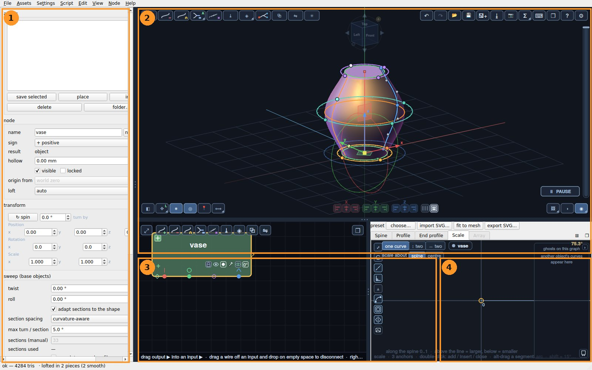
1. Getting started
The first-run screen
The first time the app opens it shows its terms — what you may do, that
it is early software, no warranty, no liability, and that nothing is
sent anywhere. The full text is in the app; there is nothing to read
elsewhere. Continuing means you accept it. If a problem does occur, it
is written to ~/.sweepercad/crash.log.
The splash screen
Point at it to keep it on screen — move the pointer away and it carries on. The support and sponsorship links on it are clickable.
The terms, updates, and what this is for
The first time it opens, SweeperCAD shows its terms; Help ▸ Terms brings them back any time. They are in the app rather than on a website on purpose — you can read them on a machine with no network.
Three things in them worth knowing without reading the whole page:
- Not for medical use. Nothing designed here should become an implant, surgical guide, prosthesis, orthosis or instrument. Medical devices need validated software and documented processes; this has neither.
- Please don't pass the app on — send people to sweepercad.com. A copy handed over never learns there is a newer one, and this is young software that is still being fixed.
- Nothing is sent anywhere. There is no analytics, no licence check and no update check, which is why Help ▸ Check for a newer version… simply opens the website: the visit is yours to make.
It is also not trying to replace the CAD you already use. It does one thing — sweeping a profile along a spine — and is meant to sit alongside the rest of your tools.
Two more things the terms say, because they matter to anyone deciding whether to rely on this:
- It was made by one person with a lot of help from AI, said plainly rather than left to be discovered, and part of any support it receives is intended to go towards environmental work to offset some of what that help costs.
- If the author stops, the app is not meant to go dark. That may mean opening the source, or handing it on — no promise about which yet. What is certain is that your projects are saved as plain, readable JSON, so nothing you make here is locked inside one program.
2. Drawing and shaping
The four graphs
Tabs under the 3D view. Each is a drawing you can edit at any time.

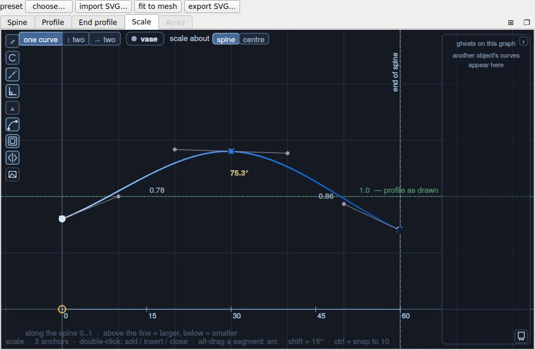

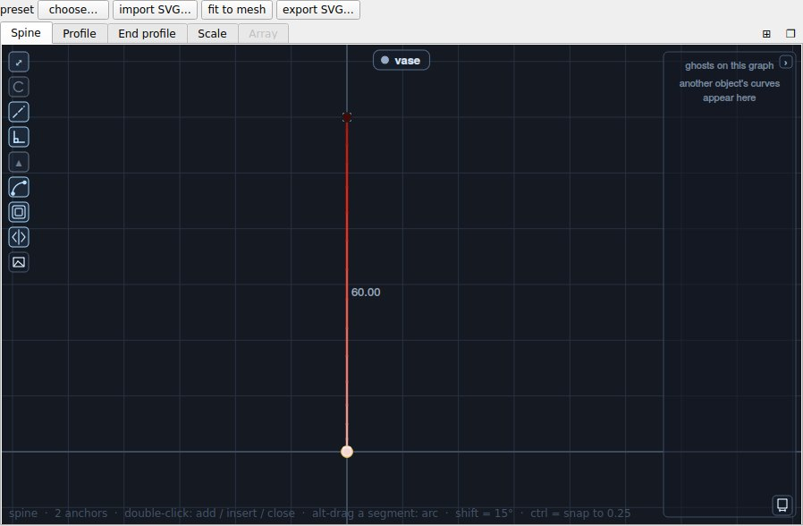
| graph | what it is |
|---|---|
| Spine | the path the shape follows |
| Profile | the closed cross-section that rides the spine |
| End profile | optional — the section morphs into this one along the way |
| Scale | how big the section is at each point (x = along the spine, y = size) |
The scale graph is drawn in proportion: its x axis is ticked in the spine's real length, and there is a dashed end of spine line. So the graph reads as the shape's silhouette rather than an abstract curve. Its handles have a hard border: a handle can never go past the points its segment runs between, however it got there (a drag, an inserted point, a typed value, a file) - a handle beyond the first or last point made the graph double back and the sweep fail. Doubling back on purpose is still done by placing the points themselves backwards.
All the graphs at once (⊞). The ⊞ beside the graphs' ❐ shows every graph in use side by side, up to four - for an ordinary object the spine, the profile, the end profile when it is on, and the scale. The tabs stay above as the list of graphs: the lit one, also lit in the grid, is the one preset, import SVG and the rest act on, and a click inside any graph makes it that one. Drag the lines between them to share out the room. Click ⊞ again for the tabs. It is remembered, and works in the graphs' own window too (❐) - on a second monitor all four get a good size.
export… beside a graph writes its curve out: as SVG, or as DXF in millimetres (a polyline within 0.01 mm of the curve) for a plasma cutter, waterjet, laser, CNC router or another CAD program - pick the type when saving.
On a narrow graph the words along the top shorten, then the controls wrap to a second row. Under about 360 px the ghost list folds to a tab (‹ ghosts, with how many are shown); click it to open the list, and the › at the top of the list folds it again at any width.
Drawing
Spine presets. The spine graph's preset menu offers a straight line, a circle (sweeps a ring) and an n-gon (a frame with mitred corners). Each starts at the origin, so the object stays where it is.
Profile presets. The profile graph's preset menu has a circle, an n-gon, a star, a splined ring, an involute gear (and a meshing pair), text, and the shapes that become something when swept: an ellipse, a rounded rectangle, a slot, a D shaft and a keyway shaft; a fluted circle (a column - give it twist and it is a barley twist), a lobed ring (twisted, a rope - one turn per lay length), an auger blade (a thin radial blade on the axis; twisted, a screw flight - add a shaft as a second + object), a curve of constant width; a rack that runs on the gears (same module and pressure angle; its pitch line is y = 0, so a gear's centre sits module x teeth / 2 above it) - and a thread. A thread is the shank seen in cross section: the outline sits on the major diameter along the crest, runs down a flank, sits on the minor diameter along the root and climbs back - one turn per pitch, so the four arcs share the circle the way crest, flank, root and flank share the pitch (an ISO V-thread: 1/8, 5/16, 1/4, 5/16, depth 0.54 x pitch). Give it the major diameter, the pitch and the number of starts; with a straight spine it also sets the twist that makes it a thread, 360° per pitch of length (divided by the starts). A bent spine leaves the twist to you. Threads are long twists, so the object is marked allow slow; a long bolt is a heavy build - model the threaded length only.
The same gestures on every graph. Click a point to select it (and drag it). Double-click on the curve to insert a point there, or in empty space on an open curve to add one at the end - a new point matches the one before it, smooth after smooth, a corner after a corner. Alt-click a point switches it between a corner and a smooth point; Alt-drag a segment bends it into a true arc.
- Double-click on the curve to insert a point; on empty space to add one at the end (open curves)
- Drag a point to move it. Near-misses will not create a point
- Lining up: dragged within a few pixels of another point's height or position across, a point (or a corner, or a handle) lands exactly in line with it and a dashed guide shows which. A handle also lines up with its own point, which makes a level or upright tangent. Holding Ctrl (the grid) or Shift (the angle) takes over from it
- Double-click a point to switch it between a sharp corner and a smooth one
- Select a point, type a number, press Enter — the segment reaching that point takes that length. Escape cancels
Any number field takes arithmetic. Type 360/7 for a seventh of a
turn, 12+3, 2.5*4 or (10+2)/3 — the relationship stays visible
while you are typing it instead of being rounded away in a calculator.
When you type a length, which end moves is yours: the darker point, the lighter one, or both — both grows or shrinks the segment about its middle, so it stays centred where it was. You can also set how many points travel together.
Rounding a corner: every sharp corner shows an R label.
Drag the label to set the radius and watch the shape change, or
double-click it to type an exact value. A point with handles is a
curve point, not a corner, so it has no radius — remove its handles first.
Drawing a spine or a profile
+ and − do two things. Click in the 3D view and a ready-made object is placed, as always. Drag and you are drawing - on the face you started on (its plane), or on the floor in empty space.

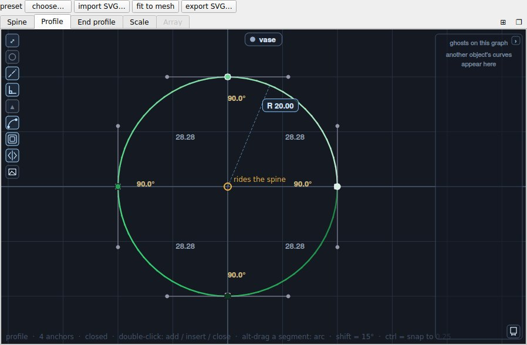
- Drag draws freehand; it is smoothed into a few curve points, and where your stroke turns sharply the point stays a corner.
- Click adds a point. Drag from the last point pulls out its handles (like a pen tool).
- Backspace (or Delete) takes the last point back.
- Right-click (or double-click, or Enter) finishes. Escape cancels.
Open is a spine, closed is a profile - the shape decides:
- An open drawing becomes a new object swept along it, with the profile, size and scale preset from the placement settings. A + one lies on the face or floor it was drawn on; a − one is centred on it, so it cuts a groove half its profile deep.
- A closed drawing - a stroke that comes back to where it started, or a click on the first point - is finished at once and becomes a new object with that profile, pushed out of the face by the placement settings' spine length. Drawn with − on a face, it cuts a pocket of that shape.
The switches at the top left while drawing: fine / normal / smooth - how closely the curve follows your hand (fewer points the smoother) - and, when an object is selected, closed: its profile: a closed shape then replaces the selected object's profile instead of making a new object. The object being drawn shows as a wireframe as you go, and afterwards its points are edited in the graphs and in 3D like any other.
Circular arcs
A bezier can only approximate a circle, and drifts the moment a handle is dragged. So an arc here is kept AS an arc — a radius and a side — and its handles are worked out from that. They are read-only, and they are rebuilt whenever you move a point. Arc segments are drawn in amber with their radius beside them.
Click the arc icon (below the others on the graph) to turn arc mode on. The segment under the cursor lights up, so you can see which one you are about to change. Then:
- Drag a segment to bend it into the arc that passes through your cursor. Radius, which side it bulges to, and whether it goes the long way round are all read off where you drag, so there is nothing to choose. Near the arc that would leave its neighbour with no corner it snaps to tangent (the readout says so).
- Click a segment (no drag) for the tangent arc: the one arc that carries on smoothly from the segment before it (on the first segment, the one that runs smoothly into the next). It needs no radius, and it stays tangent when you move points — the radius re-solves itself. Its label shows T.
- Click an arc to make it straight again.
- Click the amber R label to type an exact radius. The side and the long-way-round choice stay as you bent them, so bend it roughly, then type the number. It has to be at least half the distance between the two points. A typed radius is yours: the arc is no longer kept tangent.
Points still drag as usual while arc mode is on. Click the icon again, or press Esc, to leave it. Holding Alt while you drag a segment does the same as arc mode, without the icon.
Turning a hand-drawn curve into an arc replaces its handles; undo brings them back. For a whole circle, the circle profile preset is four true arcs.
The profile's radius
Every closed profile shows its radius on its graph (the R label): the distance from its centre to its farthest point - a circle's radius, an n-gon's corner radius. Click it and type a value: the whole shape scales about its centre to that radius, corners, roundings and arcs together, so it keeps its form.
Offset and mirror a drawing — how to hollow something
(For mirroring an OBJECT in 3D, see Mirroring an object further down. This is about mirroring one drawing on its own graph.)
In the object panel: offset / mirror, with a dropdown for which drawing it applies to.
- Negative offset goes inward, positive outward
- Your drawing stays exactly as you drew it and remains editable
- The amber curve on the graph is what actually gets swept
To hollow a shape into a tube:
- Duplicate the object (toolbar, or right-click → Duplicate)
- On the copy:
ghosts…→ LINK a curve here (live) → the original →profile - Set the copy's offset to minus your wall thickness
- Set the copy's sign to negative
- Combine the two
The wall thickness stays a number you can change, and editing the original drives the wall with it.
If an offset is impossible — too far inward, so the shape would collapse or split in two — it says so instead of building something wrong.
Guides — measuring to another object
This is the dimension tool: pick two things, type the distance you want, and your geometry moves to match.

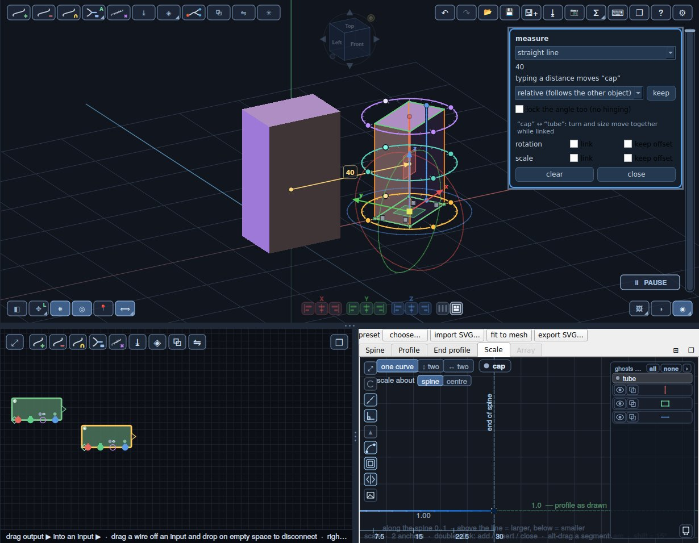
Click the guide tool on the left of a graph, then:
- Click your point — or your edge, by clicking along it rather than near a corner
- Click a point or edge on a ghost to measure to
Ghosts are other objects' curves, shown dashed. Arming the tool shows the ghosts it can measure to, so there is nothing to set up first. While it is armed every point you can aim at is drawn as a dot, and whatever is under the cursor highlights before you click it.
Edge to edge gives the shortest gap between the two edges — not a point-to-line distance, and not a crossing somewhere off the ends.
Then type the number. The guide shows its value; type a new one and your side moves (the ghost never moves — it belongs to another object, which is what makes the number unambiguous). As with segment lengths you choose how many points move and which way, so a whole run can travel together.
Locking a guide makes it hold. A locked distance is kept by a live solver, whatever moves the curve:
- Dragging. The point you drag stays under the cursor as far as its locks allow. With one lock it slides along that distance; with two (say, so far from this edge and so far from that one) it is pinned.
- Other edits — typed lengths, moving the whole shape, undo — are followed by the same solve.
- A live reference that moves takes the locked point with it, on any object, selected or not. A frozen guide keeps its target where it was, so nothing follows.
Only points that carry a lock are moved; the rest of the curve stays where it is.
No hinging. A distance alone lets your point swing round a target point, or slide along a target edge, at that distance. Tick lock the angle too in the guide's window and the direction is kept as well. The point then stays exactly where it is relative to the target, or at its spot along the edge. Such guides show ∠ beside the lock.
The arrow says which drives which. Every guide has an arrowhead pointing at your point. The ghost drives; your curve follows.
The overconstraint check. Locks that cannot all be true at once turn red and read conflict. The solver then moves nothing in that group: it never quietly picks a winner, so you decide which lock to change. A lock that only repeats what the others already force turns amber and reads redundant; it does no harm. When you lock a guide, the status bar says whether its point is now fully placed, can still slide, or conflicts, and with which guide.
Constraints on your own edges. The button beside the guide tool (an L with a small square) constrains edges of the curve itself. Click one of your straight edges and choose:
- Horizontal or Vertical
- Parallel to…, Perpendicular (90°) to… or Equal length to…, then click the second edge
- Tangent to a circle or arc…, then click a ghost's circle or a round stretch of another object's curve. The edge slides across until its line just touches it, and it follows when that object moves. A stretch that isn't round is refused.
The edge turns to the direction straight away, and the same live solver holds it from then on. Drag one end of a horizontal edge up and the other end comes with it. Each constraint is marked on its edge with a small symbol (H, V, ∥, ⊥, =, T, numbered when it pairs two edges; a tangent also shows the circle it touches, dotted). Click the symbol to remove it. Esc or the button again stops the tool.
Constraints and locked guides are checked together: ones that cannot all hold turn red and nothing in that group moves; one that repeats what the others already force turns amber. An edge cannot be horizontal and vertical at once (only a zero-length edge is both), so that pair is refused.
Which ghosts you see: ghosts… → tick objects individually, and pick
which of their curves to show (spine, profile, and so on) per object.
Placing a section as a profile
In the section panel, use as profile makes the chosen loop the selected object's profile - and with move the object there ticked (the default) it also moves and turns the object, so its spine starts exactly at the cut and heads out along the cut plane's normal. Undo takes the whole step back. (If the object is scaled unevenly, the section still sits exactly on the cut, but the sweep leans: an uneven stretch shears an object's sections against its path.)
Where the scale scales from
The scale graph means distance from the spine. So a profile drawn away from its origin — 30mm out, say — moves in as it shrinks: at half scale it sits 15mm out. That is what you want for a taper.
When the offset is a feature's position rather than part of its size, pick scale about: centre on the scale graph (in the row along its top), or tick scale about the profile, not the spine on the object - the same setting. The profile then shrinks where it stands: 30mm out at full size, still 30mm out at half. It makes no difference to a profile drawn around its own origin.
Twist and roll
Twist turns the profile progressively along the spine: 90° means the far end is a quarter turn round from the near end.

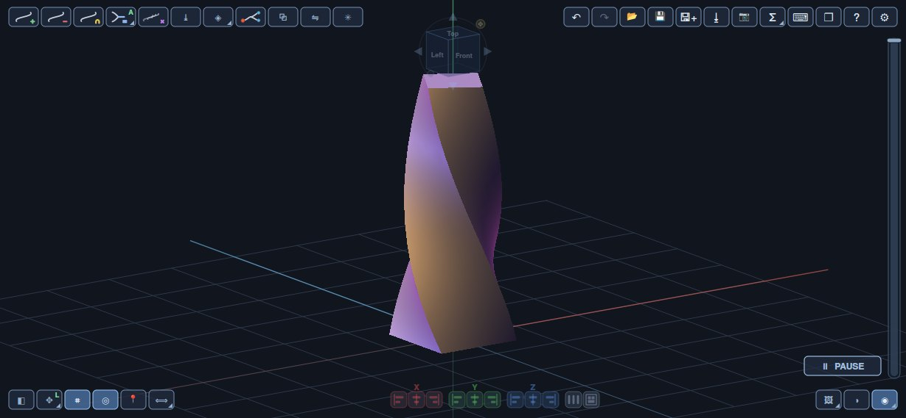
Roll turns the whole sweep by one fixed amount — the profile starts rotated and stays that way. Use twist for a spiral, roll to sit a square on its corner.
Both are in the object's panel, and both in the small dialog the node's parameter chip opens, so you can set them from the node tree too.
Spin turns the whole object about the start of its spine - the spine swings round, while the first section stays exactly where it was (roll takes the opposite turn to hold it). Spin is an action, not a stored number: type an angle in "spin: turn by" (panel or node dialog) and it is applied once, into the object's rotation; the field goes back to 0. That is how flat 2D spines make 3D shapes: spin one piece against the next. An attached piece turns about its joint by roll alone.
Roll is always one turn (-180 to 180). Twist is not wrapped - 500° really is more than 140°.
The dials
Three small rings, drawn on the selected object's own sections:
- spin (amber) round the first section,
- roll (teal) round the middle of the spine,
- twist (violet) round the last section.
Grab a dial by one of its four dots - only the dots take a click, so the rest of the ring never steals one from what lies under it. Tick marks every 15° (longer every 90°) turn with it. While you drag, nine light ghost sections show where the shape is going; the model rebuilds when you let go. Dials work relative: a twist of 500° is tweaked from 500, not reset.
Switch all three off with the dials icon (bottom left), or each one in Settings. The manipulator's off setting hides the gizmo only - the dials and curves keep their own switches.
Curve points beat the gizmo. Near a visible spine or profile point, a press grabs the point (and turns curve editing on) instead of turning the object.
Camera moves glide. Clicking a plane square or a face of the view cube turns the camera smoothly rather than jumping, so you keep your bearings; any click stops it where it is.
Asymmetric scale
Along the top of the scale graph, pick ↕ two or ↔ two (instead of one curve). You then get two scale curves — one above the axis, one below — and the profile's two halves are scaled independently. The ▲/▼ button switches which one you are editing; the other is shown as a ghost. Each half follows its own curve in both directions - it grows or shrinks in width as well as in height - and the two blend smoothly across the split line, so where they meet the profile stays smooth.
Both curves can close to a point at an end (a tip, a teardrop) and the surface stays smooth. If only one of them reaches 0 there while the other does not, the object is built with straight facets along its length.
Which way it splits is that same choice: ↕ two splits top / bottom, ↔ two left / right. The graphs look the same either way; what changes is which axis of the object the second curve drives. Since a spine only curves in one plane, this is what lets you put the asymmetry across the bend or along it. (The same switch is on the left panel, under asymmetry.)
The scale graph starts as a flat line at 1 - the profile as drawn, all the way along. Choose box in the placement settings - (0,0) (0,1) (1,1) (1,0) - for a graph whose corners you can round: it sweeps exactly like the flat line until you do, and rounding them is how you give a sweep a rounded start or end.
The scale graph in 3D. With curves in 3D on, the selected object carries its scale graph as a blue line on its surface, running along it like a seam. A symmetric graph runs on the side of the profile that lies in the spine's plane, so clicking the spine's square shows it beside the spine, flat, the way the graph draws it. An asymmetric one is two lines, the second dashed: top and bottom, or right and left when it splits left / right. Its points are there too: drag one along the object to move it along the spine, or in and out to change the scale there. Press anywhere on the line and pull to make a point there and drag it in one go; double-click the line to add a point without moving it, double-click a point to make it sharp or smooth, and right-click a point to delete it. The graph follows as you go; one undo puts it back. The first and last points stay at the ends, and the points at scale 0 (where an end cap closes) are shown small and are not grabbed. When a bend was eased, the profiles and this line sit on the eased spine - the one that was built - which is drawn dashed in red. The line always runs from the start of the spine to its end, however wide the graph is drawn (the graph is read on its own width). A smooth point shows its two handles on the object too - drag one and its partner mirrors. Where the graph is drawn from rounded or chamfered corners, you move the corner itself, and its radius goes with it. All of this works with point editing on as well.
Reality check. The stats panel's last section checks a part you made against the design. Import a scan (OBJ or STL, in millimetres), select the object and press compare with the selected object: the scan is lined up with the design wherever it was scanned from, every point is measured to the design's surface, and the scan is coloured - green within your tolerance, red where it stands out, blue where it falls in - while the design turns into a ghost around it. You get the match (the share within the tolerance), the average, the RMS, the worst either way and how much of the design the scan covers. Tick allow a uniform scale to fit the size too: a casting's shrinkage, or a print's compensation, is then reported as a percentage instead of counted as error. Which object is it? tries every part in the scene and ranks them by match. Put the scan back, uncoloured returns it to where it was imported.
Match photos of the print does the same with photos instead of a scan. Pick one or more photos and click on the part in each; the part's outline is cut out of the photo (a plain background behind it helps), and for each photo the camera is found - where it looked from, its roll and its field of view (taken from the photo's lens data when it has it, otherwise fitted roughly). You get each photo's outline match (how much the two outlines overlap) and how far apart they lie, in mm; the result window shows the design's outline over every photo, green where they agree and red where they part, and can turn the 3D view to that photo's camera. Photos check chooses whether they are compared with the selected object or with every object in the scene, ranked. A photo shows the outline only, and a symmetric part can fit from more than one side: more photos from other sides check more.
Layer jumps. Under the cross-section graph: the height to measure over and the change (in % of the section's area) that is too much. The graph gets a strip from cool to red, and the stretches past the threshold are drawn red; show the jumps on the part colours the part the same way.
Closing the stats window clears everything it drew in the 3D view.
3. The 3D view
The 3D view's own controls
Top left - making things: add a positive (+), negative (−) or keep-inside (∩) object, combine (=), auto-combine (A=), array (✕), import a CAD part or a mesh (⤓), a lattice (◈), a route (⤳), and copy (⧉) and mirror (⇋), which act on the selected object.

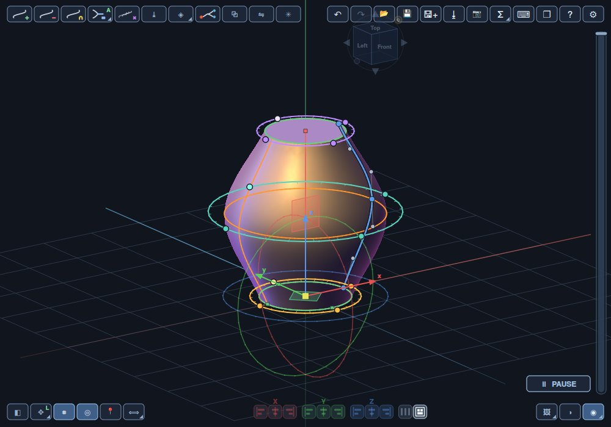
Grouped icons. A few icons hold more than one tool, to keep the rows short. A small ◢ in the corner shows it: click the corner (or right-click the icon) and a row with the others opens; pick one and the row shuts. The icon then shows the tool you used last. - = holds A= (auto-combine). The = stays the icon, and a green A on it says auto-combine is on. - ◈ lattice holds ✎ drawing on the surface - both make implicit shapes. - 🖼 references (bottom right) holds the section (extract a plane) and the line extractor - helpers that never become the part. - ✥ the manipulator (bottom left) holds the pivot and world / local; an L on ✥ says local, a dot says a temporary pivot is set. - ⟺ measure holds dimensions. - ◐ what is shown (bottom right) holds the axes, the grid, ortho / perspective and light / dark.
The switch groups (=, ✥, ⟺, ◐) keep their own icon; a state you could not see otherwise is marked on it.
Top right - the document: undo, redo, open (📂 - open, open recent, new), save, save as, export, a picture of the model (📷), the stats (Σ), the script editor (⌨), own windows (❐), help (? - how to use, the scripting reference, terms, a newer version, supporting development, about) and the gear (⚙).
Own windows - for a second monitor (❐). Put the 3D view, the nodes, the graphs or the panel in a window of its own and drag it to any screen; it is the same app, so everything stays in step - one model, one undo, the same selection, and the shortcuts work in every window. The first time, a window opens big on your other monitor (if you have one); after that it opens where and as large as you left it. Close the window to put the pane back exactly where it was. The graphs have their own ❐ at the right of their tabs, the nodes theirs in their top right corner, and the View menu has all four. Panes that were in their own windows when you quit come back out the next time you start.
The gear holds the Settings; everything else has its own icon, and an imported part's right-click reloads it from its file - so the menu bar is not needed. On Windows and Linux the gear's last entry, Hide the menu bar, puts the menu bar away (remembered, and every keyboard shortcut keeps working); tick it again to bring it back. On a Mac the menu bar belongs to the system and stays.
Icon size (Settings > Icon size, also under the gear): Normal, Large or Extra large makes the 3D view's icon rows and the node editor's 1.25 or 1.5 times bigger, glyphs included - handy on a large or high-resolution screen. Remembered. When a row no longer fits beside another one it moves to a line of its own instead of overlapping.
Bottom left - handling the model: the manipulator chooser (move and turn together, move, turn, scale, or off - no gizmo at all, clicks just select and orbit), the dials switch (◎ - the spin, roll and twist dials) and the overlays switch (⌗ - the plane squares and the curves in 3D), then what a click selects, reposition, the temporary pivot, measure, and world/local.
Bottom middle: align and distribute, for two or more selected objects.
Bottom right - how it is shown: reference images and meshes, with the section tool and the line extractor in the same icon, the world axes, the grid, perspective or ortho, the view button (see How the model is drawn), what is displayed (result, components or both), and the sun (☀): light or dark for the WHOLE interface - the 3D view and its background, the node editor, the curve editor and the panels switch together. Dark is the default; your choice is remembered. Your objects' own colours stay as they are.
Hidden dials, squares and curves cannot be grabbed either - that is the point: switch them off and nothing gets in the way of the model.
The lights ride the camera in every mode, so there is never a dark side turned away from you. The colour view lights warm against cool, which makes curvature read as a shift in colour as well as in brightness; the clay view lights it neutrally and softly, leaving the form alone.
Editing in the 3D view
Select an object and two small squares appear, one lying in each graph's plane. Click a square and the camera turns to face that plane - from the side you are already looking from, so it never swings round the back - and its points become editable. Double-clicking the object switches editing on or off too. The curves' points are already drawn before that, small, beside the radius squares; grabbing one opens editing too, and then the handles and their tethers appear. Everything that can be dragged lands exactly under the cursor:
- spine points and profile points
- bezier handles, so a curve can be shaped and not merely moved
- rounded corners — the corner a radius was cut from, which the curve itself does not pass through
- an array's own curve
A curve is flat, so its points can only move within its plane. Seen edge-on, that plane offers a single direction and a drag cannot mean anything — so it is refused, with a note saying so.
Each square wears its own graph's colour — red for the spine, green for the profile, purple for an array — so the square and the curve it belongs to always match. The camera is yours again immediately after a click — the square moves it once, it does not hold it. A square also shows its plane: a sliver means you are edge-on to it, and edge-on is the one angle from which a drag is refused.
Points are squares in their graph's colour; handles are small grey discs on a line back to the point they belong to — the same as on the graphs, so the same thing looks the same in both places.
On a scale graph, a handle stays between its own point and the next one. A curve running backwards there would no longer give one scale per position along the spine — it would double back, which the sweep then has to walk in several passes, and that is easy to cause by accident and slow when it happens. Doubling back on PURPOSE is still available: place the points themselves out of order.
Where a corner has a radius, the point you drag is the corner itself, not the two points where the arc meets the edges (nor their handles — none of them are offered). Those are consequences of the radius, so they are not offered — exactly as on the graphs — and moving the corner keeps the radius.
Drawing new curves in 3D is deliberately not offered: the graphs are where drawing belongs.
Direct editing — push and pull the model itself
The manipulator chooser (✥, bottom left) has a step for it: ⇕ direct (after move / turn / scale, before off). With it on, the model's own faces and edges answer the pointer - there is nothing to select first:
- Hover a face or an edge: it lights up and a label says what it is (block: side 2, block: end cap, c: seam) and its number now.
- Drag a side face to push it out or in. It moves its profile segment, all along the object. The neighbouring sides keep their lines, so a trapezoid stays a trapezoid; a round side changes its circle's radius; a smooth face (an oval, a curved side) moves out evenly and keeps its shape - or, with View > Direct editing: smooth faces bulge where grabbed, the curve's point nearest where you grab it moves and its neighbours ease along.
- Drag an end cap to pull it - the spine gets longer or shorter, its last piece running on. The cap has two more grips on its rim: the ● dot tilts the end (the spine's direction there, in its plane) and the ■ square scales the end (the scale graph's value at that end).
- A straight side has a ● dot at its end: drag it to turn the side about its middle (its neighbours keep their lines).
- A side facing along the spine's plane has a ◆ diamond: drag it to bend the part there - a smooth point is put in the spine where you grabbed it (or the one already near is used) and pulled sideways.
- Drag an edge to round it - between two sides it is the profile's corner radius, round a cap it is the rim rounding, between two parts it is the seam's fillet (a fillet already there can be dragged on its own face). Dragged past zero it becomes a chamfer, as everywhere. An edge between two sides also has a ■ square: drag it to move the corner itself, out or in along its middle line; both sides follow.
- A hole is pushed the same way: its wall's arrow points into the material, and the wall follows the pointer.
- Type a number instead - digits while hovering or dragging, then Enter. Esc cancels; the face goes back.
Everything is written into the graphs the object is made of - there is no separate history of direct edits - so the curves, the fields and the view always agree, and the result edits the usual way afterwards. Each gesture is one undo step. While dragging, a quick picture shows where the face goes; the exact shape is built when you let go. An edit that would break the shape is refused and the label says why (the corner has room for 4.00 mm at most, pushed through the other side, the profile follows another object's - unlink it first); a drag stops at the last value that worked.
The numbers are true millimetres in the view: on a part that is scaled, or tapered by its scale graph, a 5 mm push moves the face 5 mm where you dragged it (the profile itself moves less or more). On an object that morphs - an end profile, profiles along the spine - a push, a turn, a rounding or a moved corner is made in every one of its profiles, when they have the same corners; otherwise it is refused and said.
A profile built from several shapes is edited through its shapes: a side pushed moves the side of the shape it came from, and the profile is derived again; a shape's own corner rounds as that shape's, a corner where two shapes cross as the group's. Turning, moving corners and smooth faces are for ordinary profiles.
An imported CAD part (STEP, IGES, BREP) has no curves to write into, so its faces themselves move: drag a face and the kernel moves it, its neighbours running on to meet it; drag an edge between two of its faces to round it (past zero: a chamfer). A mesh part (STL, OBJ) has no faces to push and says so.
On a bent or twisted part, which way a side faces is read where you grab it, so the side and the rounded corner next to it are told apart right along the part.
Editing points in the 3D view
With an object selected and its curves shown (⌗), its spine and profile can be edited in the 3D view much as in the graphs: - drag a point to move it (in the curve's own plane); - double-click the curve to add a point there - only while you look straight at that curve's plane (click its square first), so a point is never added by accident while turning around the model; - double-click a point to switch it between sharp and smooth (bezier handles, which you can then drag); - right-click a point for its menu (sharp / smooth, delete), or point at it and press Delete; - every corner has a small square on a stem along its bisector: drag it into the corner to round it, back past the corner to chamfer it (a diamond), onto the corner to make it sharp again - the same control as in the graphs and on the fillet rings. Click the square to type the radius.
What a click selects
The first button of the bottom-left row chooses what clicking in the 3D view selects: the part you click (◧), or the whole assembly it ends up in (⛁) - the combine at the top of its tree, however deep the part sits. The node editor still selects anything directly.
Drag with the right mouse button to select everything inside a box - no keys needed (Shift or Ctrl with a left drag does the same). In ⛁ mode the box selects whole assemblies. A right click that does not move still opens the menu. The same right-drag box works in the node editor (it selects the cards it touches) and in the curve graphs - spine, profile, end profile and scale (it selects the points inside); Shift adds to what is selected, Ctrl takes away.
Arrange the nodes. The second button on the node editor's row (beside fit-all), or Arrange nodes in its right-click menu, tidies the whole graph: every tree flows left to right into its result, each input one column left of what it feeds and input a above b, so no wires cross; a long chain of combines becomes one straight line with what joins it just below. Loose nodes go underneath. Undo puts everything back where it was.
Deleting. Delete removes what is selected - all of it, not just the last thing clicked. In ⛁ mode, or with Shift+Delete, everything feeding the selection goes too: select a placed library model and press Delete, and all its parts go with it. Deleting a combine on its own (the part mode, or the node editor's plain Delete) frees its inputs instead. The right-click menus have both: delete and delete with its parts. Undo brings it all back.
Moving the gizmo for a moment
The ⌖ button (bottom left, right after the manipulator chooser) snaps the gizmo somewhere else: click a point on the model and turning and scaling then happen about that point rather than the object's origin. It snaps to what you probably meant - one of the curve's own points, a corner, the middle of an edge, or the centre of a round edge (the axis of a hole or a boss) - and the status line says which it took. The gizmo's axes turn to match: along the edge it landed on, square to the face it was clicked on, so dragging and turning follow the part rather than the world. Press Escape to put both the pivot and the axes back; the world/local button also returns the axes. Nothing moves when you set it, a ring-and-cross marker shows where it is, and pressing the button again puts it back.
It is temporary on purpose: it is never saved, and an autosave or an undo taken while it is on records the object exactly as it is. For a permanent version, use origin in the object's panel: that makes the object turn about another object's origin and follows it if that object moves.
How the model is drawn
The view button (bottom right) cycles through nine ways of drawing the model. SweeperCAD starts in clay + edges; the view you pick is the one it opens with next time.
- colour - shaded and glossy, lit warm against cool;
- grey - matte and soft, like fired clay;
- clay + edges - the clay grey with the solid's own edges (the CAD edges between faces, not the mesh) drawn dark on top, only where you can see them: edges behind the part stay hidden. A round surface's seam, and the line where one surface is only stored in two halves, are left out;
- wireframe - every mesh triangle;
- edges - the solid's real face outlines and nothing else: a line along the sweep for every corner of the profile, a ring only where one loft piece meets the next, the caps, fillet edges and combine seams. The selected object also shows, thinly, the rings it is lofted through;
- glass - shaded in colour but see-through, so a hole, a hidden part or the spine shows through;
- zebra - black and white light bars in reflection, for checking how smoothly surfaces meet: the stripes jump where surfaces meet at an edge (G0), kink where they meet smoothly but the curvature changes (G1), and flow on unbroken where the curvature carries on too (G2). Judge a fillet, a chain of sweeps or a smooth imported surface by eye;
- chrome - polished metal in a lit studio, in the object's own colour (a red part is red metal, a gold one gold), with the colour view's warm and cool lights. A plain grey part reads warm and cool as it does in colour.
Right-click
In the 3D view, a right-click (without dragging) opens the quick menu - as a pie round the cursor or an ordinary list, chosen in Settings > Right-click menu. Whatever is under the cursor is selected first. It offers, in this order: - manipulator (move / turn / scale / off), dials, curves & planes, dimensions, view (every view mode, direction and curvature included), grid & axes (grid, axes, local axes, fit and reset the view), - the selected part: duplicate, mirror, delete, measure, reposition, pivot, draw on it, route from here, - stats.
In the pie, move toward a slice and click, or press its number; a slice with ▸ opens its own ring; the middle (or Esc) goes back or closes.
While a tool is running, a right-click means done: it ends a click-point curve on the surface (or stops drawing), finishes a route with the points picked so far, and ends placing.
On the app's small windows (a value to type, a choice to make), a right-click presses OK - but not inside a text field, where it is still copy and paste, and never on a question (a delete stays a deliberate click).
Draft mode — when the scene gets heavy
Once a full build takes more than a few seconds, the scene switches to draft mode, and the app tells you so. From then on every edit shows a draft: the most expensive parts are simplified (fewer sections, a simpler outline) or left unjoined (their booleans skipped, the cutters shown as the usual ghosts), until the draft takes about a second. Edits stay instant, however heavy the scene.
Be in no doubt about what you are looking at:
- an orange DRAFT banner sits across the top of the view while a draft is on screen — not what would export;
- every node the draft simplified or skipped wears a DRAFT tag on its card;
- the status bar says DRAFT and how long the last full build took.
Press FULL (next to PAUSE, or the B key) to build the real model, with every boolean and blend, exactly as it would export. It runs in the background with the view usable, and CANCEL stops it. After it lands you are looking at the real thing until your next edit.
The lens - full in one spot. When FULL is too much and you only want to check one blend or one cut, press LENS (left of FULL, or L) and drag a frame over that part of the view. Every object the frame touches is built in full from then on - cutters and blends included - while the rest stays the draft; the frame stays on screen, labelled, and the status line says full in the lens frame, draft elsewhere. Edits inside the frame keep it full. The frame is a choice of objects, not of pixels: orbiting the view does not re-pick. Press LENS again (or Esc) to take it off. A frame whose objects alone take over a minute comes off by itself and says so.
Exports, pictures and STEP/STL always come from the full model. If you export while a draft is on screen, the full build runs first and the export follows when it lands — you can never export a draft by accident.
A heavy file opens in draft mode straight away, using the build times it
was saved with, so the first thing you see is a quick draft rather than
a long wait. A scene that becomes light again (fewer parts, simpler
outlines, or empty) leaves draft mode by itself. The threshold is ten
seconds; the draft_seconds preference changes it, and Settings can
switch draft mode off altogether. The first build after inserting an asset
does not count - every part is built once then, which is always slower.
4. Building parts
Placing objects exactly
Click + and the next click in the 3D view places a new object on whatever it lands on — a face, or the view plane in empty space. The placed object faces out of the surface it was put on.

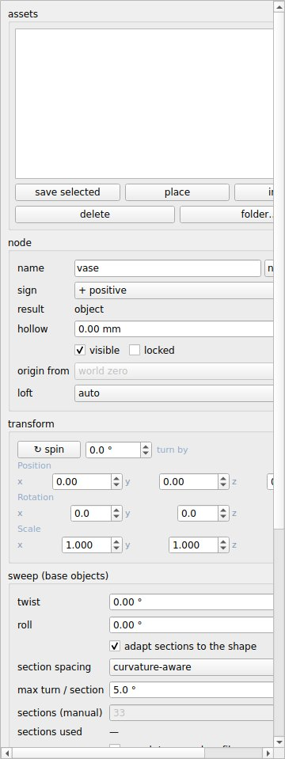
While you aim, the new object's wireframe follows the cursor, posed exactly as it will land (green for +, red for −), with the stick showing which way it faces. Tick "line it up with the nearest edge" in the placement settings and it also turns so its sides run along the edge of the face you point at - the edge the distances are measured from - by the smallest turn that does it. "show the object while placing" switches the wireframe off if you'd rather see only the stick.
Turn it with the wheel. While placing, the mouse wheel turns the object about the face it sits on, 15° a notch (the angle shows under the dot); the view does not zoom until it is placed. With the edge line-up on, the turn counts from the edge - two notches is square across it. Assets show their wireframe too, and turn the same way.
The placement settings window (the small icon beside +) holds what a new object starts as and how it lands:
- depth — on the surface, or sunk in by an amount
- new profile — an n-gon by default (a square), or a circle
- spine length — how far it is swept (default 10)
- profile radius — how big it starts (default 7.07: the square's corners, so a new object is a 10 mm cube)
- scale — which scale graph it starts with (the default flat line, the box, or a preset such as to zero)
- keep — a distance from the nearest edge, and a second, different distance from the edge the cross arm meets (see below)
- snap — how close the pointer has to be before a guide takes hold, in pixels; 0 turns snapping off
- also snap to the middle — offers the midpoint of each guide
The profile and spine-length fields grey out when you are repositioning or placing an asset, because they only apply to a new object.
Guides. While you hover a face, a dashed line runs from its nearest edge through the pointer. Set a keep distance and one point on that line is exactly that far from the edge; a second arm runs across the face at 90° so the far end of a narrow face is reachable too. The dot appears only when your click will land on it — no dot, no snap. Where the two arms cross is a point the set distance from both edges.
Two different distances. Fill in both keep fields — say 5 and 10 — and the point is 5 from one edge and 10 from the other. Each distance is measured square to its own edge, so it stays exact on a face that is not rectangular. Which two edges? The nearest one, and the one the cross arm runs into — so the pair follows your pointer as you move around the face. With both fields set, that point is the only thing the tool snaps to.
Both midlines at once. With also snap to the middle on, moving near where the two midlines cross snaps to the middle both ways rather than to one of them.
Readout. Beside the pointer, four distances — left, right, front, back — from the pointer to the edges of the face under it, along the face, in screen directions. It is a readout, not an input.
Repositioning (the pin icon) and placing an asset (double-click it in the shelf, or its place button) use the same hover, guides and snapping.
Carrying a spine on. While placing, repositioning or dropping an asset, point at the end (or the start) of any object's spine: a cyan ring shows there. Click it and a small menu asks — Continue "…" from its end attaches the object so its spine starts right there and carries on the same way, matching that spine's twist and scale at the joint (it sinks a hair into it, as any placement does, so the joint can be rounded); Just place it here places it normally. Continue "…", profile linked also links the new object's profile to the face it continues from - that object's end profile, or its profile while it has none - so a row of lofts stays joined: give a segment an end profile and the next one starts with it. Continued pieces are combined into one solid. Runs and stacks have the same choice: link each segment's profile to the one before. Moving the first object later takes the attached one with it (the same attachment the node editor's attach port makes). Choose Don't offer this again to switch it off; the placement settings window has the switch (offer to continue a spine when clicking its end) to turn it back on.
The camera keeps working while you place. Zoom and pan (middle-drag, or shift-drag) move the view mid-placement; orbit does not, because the left button is placing.
Twist and roll. Twist turns the profile progressively along the spine — 90° means the far end is a quarter turn from the near one. Roll turns the whole sweep at once, about the spine, including its first section. Use roll to orient a square or an n-gon; use twist to make it spiral.
Nodes
Each card is the colour of what it is: green a positive object, red a negative, yellow a keep-inside one, blue a combine, purple an array, cyan an imported part (a mesh with a dashed border), magenta a lattice (a colour you give a node yourself wins). Any node takes +, − or ∩: the badge at its top left goes + → − → ∩ (+) → ∩ (−). A combine or an array normally takes its sign from what goes in; set from its badge it keeps its own - a combine of two parts set to − cuts as one piece - until the badge comes back round to the sign its inputs give it.

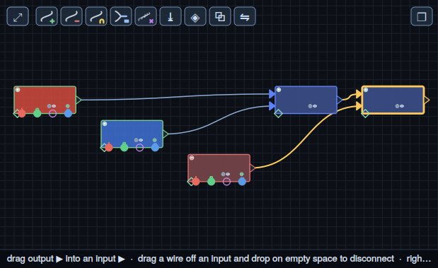

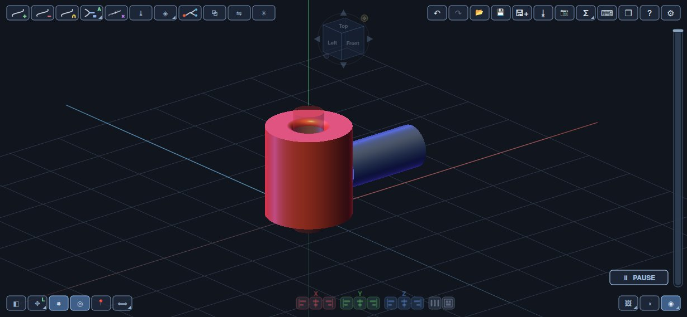
- + / − / ∩ add a positive, negative or keep-inside object
- = combine two selected objects
- ✕ array
- ⤓ import a CAD part or a mesh
- ◈ lattice
- ⧉ / ⚇ duplicate the selected node, or duplicate it with everything feeding it
On a node: double-click the name to rename, click the colour chip to recolour. The chips along the bottom right are lock, visibility, blend mode (on combines), curve or surface (on arrays), colour, and the node's key number - twist on an object, the radius on a combine, the copies on an array. Clicking that number opens the node's own dialog: twist, roll and spin for an object; everything about the array for an array.
Imported parts look different on purpose, since they have no graphs: a CAD part is a cyan card with "CAD part"; a polygon part is cyan too, with a dashed border and "polygon · no CAD" - a reminder that it is a mesh. A lattice node has one input and no output: it is an end point.
The boolean is never chosen — it follows the signs.
(+)(+) fuses, (+)(−) cuts.
Keep only what's inside (∩)
The third sign, next to + (adds) and − (takes away): a ∩ object keeps only what lies inside it of whatever it is combined with. It is drawn yellow and see-through, like a negative is red.
- Placed or drawn on a face, a ∩ reaches from just below everything under that face to just above it - a cookie cutter: draw an outline on the top of a part and the part is cut to that outline, all the way through. With nothing selected it joins the object it was put on.
- What is left counts as + or −. Its badge on the node (and the sign box in the panel: keep inside, adds or keep inside, cuts) decides: kept as −, the trimmed piece then cuts whatever it is combined with next - a lens-shaped hole from two arcs, say. Clicking the badge goes
- → − → ∩ (+) → ∩ (−) → +.
- Two ∩ together make one smaller keep-inside shape (inside both).
- The trim blends like a join: fillets, chamfers and smooth (G2) blends round the edge where the cut runs.
- A ∩ trims only inside its own combine - put the parts you want trimmed and the ∩ in a combine of their own, the same way you scope a negative.
- Nothing inside the ∩? The combine says so instead of leaving you guessing.
While a ∩'s combine - or anything in it - is selected, the parts it trims show faint grey at their full size, so you see what was cut away.
Uses: cutting a part to an envelope; keeping the overlap of two sweeps (two silhouettes, side and top); clipping a lattice or an array to an outline.
Mirroring an object
Mirror… sits in a node's right-click menu and on the ⇋ button, both in the node editor's toolbar and in the 3D view. The ⧉ beside it duplicates: for a combine it asks whether to copy just that node or everything feeding it, as the node menu does. The pop-up asks:
- across which plane - the object's own left/right, front/back or top/bottom plane (mirrored in place, so the image sits where the object is), or a world plane, YZ, XZ or XY;
- through the world origin, the object's own origin, or the centre of what is mirrored (world planes only);
- keep the original, which makes a mirrored copy rather than flipping the object itself;
- include everything feeding it, so a combine is mirrored with all its parts.
Only the placement changes: the graphs stay exactly as drawn, and a combine mirrors with everything inside it. A mirrored copy is an independent copy - it does not follow the original afterwards. Mirrored objects carry a ⇋ badge on the node, and their graphs say "mirrored in 3D", because dragging a point to the right there moves the mirrored shape to the left.
A stack of objects
The placement settings carry a segments field: 1 places a single object, more drops a run whose spines join end to end, with a combine tick to union them into one solid. It greys out when the click will not create - repositioning, or placing an asset.
Add a stack… in the node editor's right-click menu asks how many, then makes a run of objects whose spines join end to end. Each one after the first is attached to the one before it, so they stay joined when you move the first.
By default the stack is placed with a click in the 3D view, the same as placing a single object - it stands out of the surface under the cursor, and the whole run comes with it.
By default the segments are combined into one solid, so the stack is a single body - ready to fillet at the joins and to export as one part. Untick that and they stay separate objects that touch, which is lighter while you are still shaping them.
They are ordinary objects afterwards: edit any of them, fit any of them to a scan, delete one and the rest keep their chain. Their profiles are independent - changing one does not change its neighbours.
A stack of sweeps from cuts
In the section panel, stack from cuts… rebuilds what the plane is cutting - a mesh reference, or your own parts - as a chain of sweeps in one go. Say how many cuts: they are taken evenly along the plane's direction, from just inside one end to just inside the other, and each pair becomes a piece - the lower cut its profile, placed at the cut with the spine heading up to the next, the upper cut its end profile. Every piece's start is linked to the end of the one below, so editing one cut moves both pieces that share it and the chain stays continuous. More cuts follow a curved body more closely; six is a good start. Undo takes the whole stack back. (Point the plane along the part's length first - the cuts follow the plane's direction, whatever it is.)
A bent body. Select an object whose spine follows the part's curve - a thin helper drawn along a hose, a horn, a handle - and stack from cuts asks whether the cuts should follow that spine: planes square to it at equal steps, and each piece carries its own stretch of the curve. Piece two is placed exactly on the end of piece one, and so on, so the chain is continuous by construction; the helper can be hidden or deleted afterwards.
Arrays - along a curve or on a surface
An array repeats whatever is wired into it. It takes that object's sign: an array of a negative is negative (drawn red and see-through), so an array of holes cuts.
Where the copies go is chosen on the node itself - the curve / surface chip (a wave, or copies on a line) and the copies chip both open the array's dialog - and in the panel, "place on":
- along the curve - the Array graph, as always: count, one per point, follow the curve, spin and scale per copy.
- on the surface of an object - pick the object; the copies stand on it, each turned to face out of it (a negative one faces in, so a hole reaches into the part). Scatter spreads them evenly over anything (with a minimum spacing and a random seed); grid puts rows along the spine and columns round the profile of a plain sweep. Depth sinks each copy into the surface (negative lifts it off); random twist turns each about its own axis.
Each copy is placed by its own origin - the point the object was drawn around - not by the world's origin, so it does not matter where the object sits before you array it. The copies follow when the surface changes. Untick a copy in "copies shown" to leave it out.
Where the curve sits. An open curve starts at the object's origin: the first copy is where the object was. A closed curve goes round the object: its middle (the middle of its extent) is on the object's origin, and the Array graph marks that point. Untick "closed curve: round the object" to place a closed curve exactly as drawn instead. Copies round a closed curve are spaced evenly all the way round - six copies, six equal gaps - and each turns about its own origin to follow the curve. While you drag a point the middle stays where it was; it settles when you let go.
Editing the curve in the 3D view. The array's purple curve is drawn where the copies are - it moves and turns with the array - and is edited there like a spine: drag a point, double-click a point to switch it between sharp and smooth, drag a smooth point's handles (the other side follows), double-click the curve to add a point, and right-click a point (or point at it and press Delete) to remove it.
The object being repeated shows as a see-through purple ghost where it was modelled - the array graph's colour - whenever no copy sits there (round a closed curve, say). It is not part of the result: placing, snapping, measuring and exports pass it by. Click it to select it and edit it like any object; the copies follow.
The original as well. The copies replace the object. Tick "keep the original too" to keep one more exactly where the object is - a hub inside a ring of copies. It is not added twice when a copy already sits there.
Hollow
Every object and combine has a hollow field (under "result"; 0 = solid). It makes the part a closed shell of that wall thickness, as exact CAD. On a combine the cavity is built from the parts, so the wall is never thinner than asked (thicker where a union joins). On some filleted combines the CAD kernel cannot do it; the app refuses rather than return a wrong part, and points to the lattice node's hollow instead.
The same setting sits on the node as a small chip: a solid dot when the part is solid, a lit ring when it is hollow. Click it to type the wall thickness (0 = solid).
The lattice node
◈ makes a lattice. With an object selected it fills that object; with nothing selected it fills a box. It has one input and no output - it is always the last step - and it is drawn and exported as a mesh.
Types, grouped: surfaces (gyroid, Schwarz-P, diamond, Neovius, IWP, lidinoid, split-P), 3D struts (cubic, BCC, BCC+cubic, FCC, octet, diamond, star), 2D fills extruded along an axis (square, diamond, triangle, kagome, honeycomb), foams (Kelvin, rhombic, random Voronoi), and your own: a custom cell typed as struts, or any object of yours as the cell, repeated every cell size.
Surface cages - hollow wireframes on the object's surface, nothing inside: a Voronoi cage (the borders between cells spread evenly over the surface) or a strut cage (points spread evenly over the surface, neighbours joined by straight round struts - an even, mostly triangular net). Cell size is the spacing, wall / strut the strut's thickness, seed another random spread. A tile cage lays your own 2D cell (edit custom cell) into every quad of an even net over the surface - each quad turned the same way, so a tile with a direction keeps it; with no 2D cell yet it is a plain quad cage. On sharp edges the net comes out bevelled at about the cell size. A rind is a shell just inside the surface, depth thick, with a smooth round hole in every cell - the carved-gourd look; wall / strut is the rim left between two neighbouring holes, and the rims are rounded where hole meets shell. "Pattern in" and skin do not apply to cages (nor depth, except for the rind).
Form: sheet (a wall either side of the surface) or strut (the solid network). Cell size and wall / strut thickness in mm; a skin closes the outside with a solid wall.
Pattern in decides where the pattern goes: the whole volume, a plain hollow wall, a patterned shell, a perforated shell, emboss (standing out of the surface) or engrave (cut into it), with a depth. "Follow the sweep's surface" wraps 2D fills round a sweep, bends and all, with no seam.
Decal: text (any font), an image or an SVG, projected onto one side of the part and embossed or engraved there.
Place - a repeating pattern (gyroid, honeycomb, struts, foams, grid, Voronoi) can be slid across / up / along the object and turned, as numbers in the panel or by hand: with the lattice selected an amber handle with three spokes sits on the part - drag it to slide the pattern, Shift-drag to turn it; the numbers follow and the model rebuilds when you let go.
Grading - "vary" thickness or cell size by a direction, radially, by a grayscale image, or by your own graph (the Grade tab, x along the part, y in mm). Attractors: other objects that thicken (or thin) the pattern near them, fading over a distance you set.
Cut: holes - other objects cut right through wall, pattern and skin: drain holes for a hollow part, or bolt holes.
The view shows a lighter preview; tick "full detail in the view" to see exactly what will be exported. Exports are always full detail.
Parameters
Any number field takes a name instead of a number, with arithmetic:
tube.diameter + 2, wall / 3, tube.length. Every object offers its own
numbers under its node name - diameter and radius (a circle profile),
width, height, length (the spine), twist, roll, x, y, z, the
rotation rx, ry, rz (degrees), the scale sx, sy, sz and scale
(the uniform size), and a lattice's thickness and cell - and the name
completes as you type (Tab
takes it). A field that holds one shows ƒ before the value; hover it for
the expression; type a plain number to let go. When what it refers to
changes - typed, dragged on a graph, dragged in 3D - the field follows and
the model rebuilds, down a chain (a cap that follows a sleeve that follows
a tube). It works in twist, roll, position, rotation, scale, a lattice's
wall and cell, the circle-radius chip on the profile graph, and the length
of a straight spine (click its label). Edit → Parameters… is the table
of your own names (wall = 3), each with who uses it. A typo keeps the last
value and says what is wrong; a deleted object does the same.

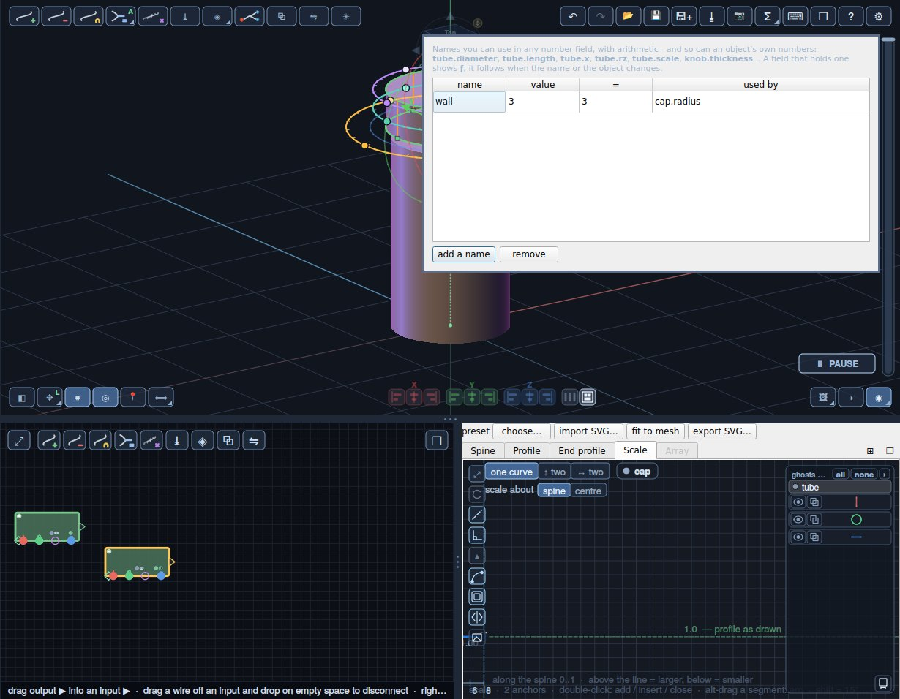
Pick instead of typing. While a number field has your cursor, click a
part in the 3D view or its node in the graph: the part's number for that
field (tube.rz in a rotation field, tube.x in a position field) drops
into the field and the field keeps the focus - the part is not selected.
Type the rest (+ 90) and press Enter. Clicking the selected object's own
node is an ordinary click.
The ƒ chip. A node with a linked field shows a small ƒ among its chips. Hover it to see the links and dotted wires to the objects it follows (they show only while you hover, so they never tangle with the curve links); click it to select the node, with the links in the status bar.
Turn and size from the measure tool. Position is the kept dimension above (relative); rotation and scale have their own row in the measure window. Select one object, measure from it to a point on the other, and tick link on the rotation row and/or the scale row - the two are linked from then on, both ways: turn or scale either one with the gizmo or a field and the other does the same (a ƒ in the transform fields). With keep offset ticked when you link, both keep what they have now and move together from there: 5° more on one is 5° more on the other, half its size stays half its size. Without it the values are shared - the selected object takes the other's rotation or scale now, and they stay equal. Untick link to free them again (a plain number typed into one field frees that axis only). Each object turns and scales about its own origin (or pivot), and the kept offset is a real composed turn in the other object's frame, so it holds whichever way that object is tipped - not three angles added up, which would only be right about a single axis. This is separate from a kept dimension's lock the angle too, which fixes the measured bar's direction. A linked pair shows a dotted line between the two origins in the 3D view with what is linked at its middle (↻ rotation, ⤢ scale, ↔ a linked position); click the badge to unlink one or all of them. When a kept dimension already joins the two objects, the badge sits on that bar instead and no second line is drawn. It comes and goes with the kept dimensions (the ⊢ switch).
rotx(obj, ox, oy, oz), roty(...), rotz(...) can be typed into any
rotation field yourself: the object's rotation composed with a turn of
(ox, oy, oz) degrees in its frame, one axis of the result per field.
5. Fillets and chamfers
Rounding and chamfering a corner
Drag the radius on a corner and it rounds. Drag back through zero and it chamfers - the same control, the other direction. The corner is trimmed identically either way; a round joins the two trim points with an arc, a chamfer with a straight cut.
Zero has a small landing place in the drag, so you can put a corner back to sharp without sliding past it - about two per cent of the corner's own edge, so it feels the same however far you are zoomed out.
Double-click the radius to type it and the dialog asks which you want, since a typed number cannot say it the way the drag does. Zero is still a sharp corner and comes back exactly - the corner point is never moved.
A fillet that changes along the seam
Select a combine and every ring where its parts meet shows in the 3D view (with the curves switch ⌗ on - the same switch that shows the curves in 3D), with one point carrying the ring's radius: 0 when the seam is still sharp. Each point has a stem with a small square on its end - the longer the stem, the bigger the radius. Everything is done with the mouse alone: - drag the square out of the ring: a fillet, wider the further out; drag it in, past the ring: a chamfer (the square becomes a diamond) - the same control, the other direction, as a corner in the graphs; back on the ring it is sharp again. With one point the ring is the same all round; - click a + between two points to add a point there, then set its square: the blend now changes from one point to the next, smoothly, all the way round (a ring has no start or end). Chamfers are constant: a ring's points are all fillets or all chamfers; - drag a point to slide it along the ring; - pull a point clear off the ring (it turns red with a ✕) and let go to remove it; the ring always keeps at least one point; - click a point to type its radius exactly (a negative number is a chamfer).
The combine's mode follows the rings: none while every ring is sharp, fillet otherwise. A negative radius in the seam table is a chamfer.
Where two round parts meet, the ring is made of several seams end to end (one per face). The points belong to the whole ring, not to one seam. Every change rebuilds the blend and is one undo step.
Quick shapes: under the seam table choose a shape (the same all
along, one swell, thin in the middle, two swells...) between the thin
and full radius, and press apply - for the rings of the seams
selected in the table, or every ring when none is. A ring with a shape
shows "ring 0.3–3 (drag in 3D)" in the table. For one seam on its own
you can still type points as t,r; t,r (t from 0 to 1 along the seam).
An ordinary fillet is round (G1): the surfaces meet with the same direction but the bend jumps - from flat straight to the fillet's radius - and the zebra view shows a kink in the stripes where the blend starts. On polished metal that kink is a break in every reflection.
Smooth (curvature-continuous) fillets
Tick smooth (curvature-continuous) in the combine's blend box. Each fillet is then rebuilt so it matches not only the direction of the faces it joins but also how they bend (G2): the stripes in the zebra view flow round the corner without a kink, and so do reflections on the cast part.
- fullness (0.5 - 2, default 1): how far the blend reaches into the corner. More fills it out, less pulls it in toward the corner. The blend starts and ends where the ordinary fillet of the same radius would.
- Radius, variable radius and rings work as before - the smooth blend is built on top of the ordinary fillet, between the same two lines.
- A seam with corners - a square peg, a rib, a boss - is smoothed as one loop: round each corner the blend turns on the peg's edge the way a ball rolling over it would - the peg's edge stays sharp down into the blend, as it does on a real filleted boss - where the ordinary fillet runs each side on past the corner and cuts them against each other with a hard crease. A very narrow tip (a star's point with a blend nearly as wide as the face) may keep the ordinary fillet.
- A seam that runs into a flat end cap (a sweep's end) is smoothed too. Where it cannot be done safely - a seam ending somewhere else, a chamfer - that seam keeps the ordinary fillet, and the status line says how many were smoothed and how many kept.
- Which is which: with the smooth switch on, the seam table's status reads ✓ 2 · G2 for a seam that came out curvature-continuous and ✓ 2 · G1 for one that kept the ordinary fillet (hover it for why), and the ring's label in 3D says G2 or G1 after the radius.
Fullness that changes along the seam. With the smooth switch on,
each point on a fillet ring gets a second, hollow square a little
beyond the stem's square. Drag it out for a fuller blend there,
in for a flatter one (0.5 - 2; the label reads r 2 · f 1.4); with
two or more points the fullness eases from one point to the next, like
the radius. Click the hollow square for a menu to type it or go back to
the default.
An uneven chamfer
A chamfer's point has a hollow diamond beyond its stem's diamond: the
chamfer's second distance. Untouched, both distances are equal. Drag
the diamond out or in and the chamfer becomes uneven - c 3/1.5 cuts 3
mm into the seam's first object and 1.5 mm into the other. flip the
chamfer's sides in the diamond's menu swaps them. With several points
the two distances each ease round the ring.
When a fillet will not take
A seam that refuses to blend is asking for a radius that does not fit. Which way to move depends on the shape: on a finely traced or sliced outline the radius is usually too LARGE for the room between facets - a 16-sided profile blends at 0.5 mm where it fails at 1 mm - while on smooth surfaces meeting at a shallow angle it can be too SMALL — measured on a box and cylinder union, 0.25 to 1.0 all failed and 1.5 blended every seam. When one fails the app tries a few larger radii on that seam and tells you the first that works, so the message names a number you can use rather than a dead end.
Rounded another way. Some joins the kernel's fillet cannot make at any radius - a handle whose outline turns tighter than the radius where it meets a curved body is the usual case. Then the app rounds the seam another way: it trims a narrow strip off both faces along the seam and fills the gap with a surface that meets both faces smoothly. Where seams meet at corners - three edges of a box at one point, a square peg's loop turning at the peg's edges - each run of seam between corners is done that way, the runs meet in a mitre where a loop turns, and what is left open at a corner where three meet is filled with a patch that meets everything round it smoothly. The result is checked like any fillet (one closed, valid solid), and the combine says rounded by trim and fill. If the full radius does not fit, it tries half the radius before leaving the seam sharp. A seam that stops on a face, with no other seam carrying on from its end, is still left to the kernel. It is a switch under Settings > Geometry kernel (round seams the fillet cannot, by trim and fill), on by default.
What the app does first. A seam around a boss or a hole is one LOOP, even though it is made of several edges. If the full radius does not fit, each loop is blended at the largest radius IT can take, the same all the way round — so a loop comes out even, never half round and half sharp, and one tight spot does not shrink the other loops.
Each spot as big as it fits. Even is not always what you want: a boss standing close to one edge of a plate gets the small radius its cramped side allows all the way round. Tick each spot as big as it fits (uneven) in the combine's blend box and every stretch of the loop gets as much of the radius as there is room for there — measured from the seam to the nearest edge of the faces beside it — easing smoothly between, so it is large where there is room and small where it is cramped, never a step. The status line says how far it eased down, and where.
When a rounding crashes the geometry kernel. Rare, but it happens on awkward shapes. The app then looks for the combine at fault and tries it at half and at a quarter of its radius, and only if those crash too shows that one combine without its rounding — every other rounding stays. The status line names the combine and what was done; your own radius is not changed.
Where it happened. In the 3D view, a loop that got a smaller radius than you asked for is marked in yellow while its combine is selected, and a seam that was left sharp is marked in red all the time — so an edge you did not mean to leave sharp is noticed without opening anything. The combine panel lists the same seams, with the reason for each.
The section switch, next to the reference switch, cuts a loaded reference mesh. Click a surface and the plane is taken from it, the same way placing works; the sections found are drawn over the model, and clicking one makes it the selected object's profile and keeps a copy in your curve library so you can use it again. Cut across a cylinder and you get its circle; cut down the side and you get the rectangle through the middle — the click decides which.
fit to mesh, beside the SVG buttons, samples whatever else is there — a loaded reference mesh, or another object in the scene — at this object's own ends. When there is more than one thing it could sample it asks which: everything, the imported mesh, everything you modelled, or one object by name — combines included, since a combine is what you actually see. Picking "everything" skips the parts that feed a combine, so a tube is counted once rather than three times. The section panel offers the same choice, in the same words and uses what it finds as the profile. It asks which: the start, the end, or both — fitting one leaves the other exactly as you drew it. Fitting an end profile turns on "morph to an end profile" for you; you do not have to tick it first. Both ends get the same number of points so the morph between them does not twist, and the result is a normal editable curve. The object's ends have to be inside the mesh.
The scale graph is applied on top. The sweep's section anywhere is the profile (morphing into the end profile) times the scale there, so what is measured at an end is divided by the scale graph's value at that end: with a graph at 0.5 the fitted profile comes out twice as big, and the built object still meets the reference. (Using a section from the section panel as a profile does the same.) fit the end profile's shape, its size into the scale is the other way round: the end profile is kept at the start profile's size, so it only changes the shape, and how much bigger or smaller the end is goes into the scale graph's end, where you can see and edit it.
fit everything: spine, profile, scale does the three below in the order they depend on each other: the spine first (the other two are measured from it), then the profile - the reference's section a little inside the start, cut square to the spine there, and an end profile likewise inside the end unless the reference narrows to a point there - and the scale last, measured against that (morphing) section. Measured: a straight line and a plain circle became an S-shaped oval horn at 99.3% of its volume, on average 0.4 mm from its surface. An object is never measured against itself: the combines it is part of are left out of what is sampled.
Two more ways to fit everything, for stacks (pieces joined end to start by create stacked objects or connect spines):
- fit everything, keep its ends - one piece inside a stack: its two ends stay where they are, in place and in direction, and only its inside follows the reference.
- fit the whole stack - the stack's spines are joined into one, centred as one curve, and split again at the joints, so each piece ends in exactly the direction the next one starts in (an attached piece is turned to match its neighbour's end; pieces fitted one by one cannot meet that). Sections at a joint are cut exactly there, so both neighbours share the seam. Measured: three straight pieces became an S-shaped horn, on average 0.6 mm from it, the joints closed. The stack has to lie in one plane; one that turns in 3D is fitted piece by piece with keep its ends. The other pieces of the stack are never sampled as reference.
The same menu has centre the spine in it: draw the spine roughly through the reference - a straight line is enough, and it may stick out at the ends - and every point of it moves to the middle of the reference's surface on its two sides, square to the spine in the graph's plane, round after round until it settles. An end that stuck out is cut back and put on the reference's surface; an end inside stays where you drew it. The result is a normal editable spine with as few points as hold it (measured: four rough starts on an S-shaped tube all came within 0.2 mm of its true centreline, with 3-5 points). A spine is a curve in its object's plane, so how far the reference's centre lies off that plane cannot go into it - the status line says how far to move the object instead.
fit the scale graph: the spine is walked from its start to its end and, at every step, the reference's surface is found on both sides of it - in the plane the graph is drawn in, or, on an asymmetric object split front/back, across it (the split switch decides). Its distance from the spine over the profile's own half-size becomes the scale there, so the sweep takes on the reference's changing thickness along the whole spine, not only at the ends. A symmetric object gets one curve (the mean of the two sides); an asymmetric one gets its two curves, one per side. Only the stretch between the start and the end profile is read. Where the reference stops before the spine does, the scale runs to 0 there, and the sweep ends in a point at that spot - the rest of the spine is left out, and the status line says at what fraction. So: put the spine through the reference (a line taken off its surface, or drawn), give it roughly the right profile, fit the ends, then fit the scale. With the spine centred first, a straight line drawn through an S-shaped tube came back as the tube at 100.3% of its volume.
It is the exact opposite of applying a scale: measured on an S-shaped spine, a scale graph applied to a sweep and fitted back comes back within 0.4%. That holds while the profile turns with the spine (follow the spine, the default, or up). With a fixed or yaw heading on a curved spine the sections lean into each other and the fit is approximate - the status line says so.
A scale graph that reaches 0 and stays there - fitted or drawn by hand - ends the sweep where it first reaches 0, with a point; before this a zero in the middle of the spine was clamped to a hair and ran as a needle to the end.
The panel chooses how a section is sampled:
- mixed fits curves along the smooth runs and keeps creases sharp. Best for scans and most real parts, and it passes exactly through the corners.
- smooth fits one curve all the way round - fewest anchors on anything round (a 48-sided section goes from 145 points to 3) - but it rounds corners off.
- cornered keeps straight segments and sharp anchors.
Fewer anchors matter: they are what every later fillet and boolean pays for.
A section can be a spine as well as a profile: "use as spine" sweeps the selected object ALONG the line you cut instead of across it - trace a rim or a seal on a scan and follow it. A closed section gives a closed sweep.
The section switch, beside the reference button, cuts a loaded reference mesh. Switch it on and a plane appears in the middle of the model, already cutting; move and turn it with the ordinary gizmo and the curves follow it. The panel also takes a height and a tilt as numbers, if you know the cut you want. The curves it finds are drawn in place - the chosen one bright, the others dim. Tab picks between them, Enter makes the chosen one the selected object's profile, and S saves it to your curve library, where it is offered like any other saved curve.
The measure panel offers a lock: the straight line between the two points, or only the distance along X, Y or Z, or the distance ignoring one axis ("ignore Z" is the horizontal distance between two things at different heights). The line on screen always shows what the number counts.
Typing a distance moves the object along whatever the measurement counts, so the number you type is the number you then read. The window names the object that will move, and says so plainly when nothing is selected — measuring still works, but there is nothing for a typed number to act on. Switching the tool off closes the window with it.
Keep a measurement as a dimension. Select the object that should hold the distance, measure, and press keep. The measurement becomes a lasting dimension, drawn in the view with its value and a lock. It keeps the measurement's lock too: along X only stays along X only.
- Relative (the default) measures to a point on the other object. When that object moves, yours follows.
- Absolute measures to that spot in the world, which never moves, for example "6 above the floor". If the far end isn't on another object, the dimension is absolute anyway, and the status bar says so.
The solver moves positions only, never rotation or size. While you drag with the gizmo, the object slides only where its dimensions leave it free: one along X stops it moving in X, and three pin it. Dimensions that cannot all hold turn red and nothing in their group moves; redundant ones turn amber; one whose object was deleted turns purple and keeps its last position. Click a dimension's label to retype it, make it absolute or remove it. An attached piece cannot keep a dimension, because its attachment already places it.
Placing can keep its distance too. In the placement settings (right-click the + or − icon), keep distance can be off, relative or absolute. With it on, an object placed by snapping to "N from an edge" keeps that distance as a dimension. It is measured square to the edge, across the face, and turns with the object it was placed on when relative. With two distances (from two edges), it keeps both.
The ⊢ icon (bottom left, beside the measuring ruler ⟺) shows or hides the kept dimensions. It turns itself on when you measure or place, and it is remembered between sessions. Hidden dimensions still hold.
No hinging in 3D either. Tick lock the angle too before you keep a measurement, or in a dimension's window later. The bar then keeps its direction as well as its length: the object cannot swing round the other end, and when the dimension is relative it turns with the other object. These dimensions show ∠.
Which drives which. A kept dimension's arrow points at the object that moves. In its window, swap hands the moving over to the other object. The measure line also shows an arrow at the end a typed number would move.
The what-is-shown button carries its state: a filled circle for the result, a hollow one for the components, a ringed dot for both.
Each of these tools refuses to switch on when it has nothing to work on, and says which thing is missing: the pin needs an object selected to reposition, the section switch needs something to cut - an object or a reference mesh to cut, and measure needs something in the scene to click.
The measure switch lets you click two points and see the distance between them. The points snap to edges and features the same way placing does, and a third click starts a new measurement.
The ✛ switch at the bottom right draws the world axes through the origin — red for X, blue for Y, green for Z, the same colours the gizmo uses. The grid gives you a floor; the axes give you a direction on it. Switch them off on a dense model, where three long lines through the middle are clutter.
While the pin is carrying something it is drawn faint, so you can see the surface you are aiming at through it. Nothing has moved yet: cancel and it is exactly where it was.
When you move something with the pin, it ignores the object being moved, so a click lands on whatever is behind it rather than on the thing in your hand.
A click on empty space puts the object on the ground, where the grid is - not floating at whatever depth the camera implied. Click a surface instead and it goes there, as before.
An object placed ON a surface sinks a hair into it — one per cent of its own size — so the two genuinely overlap and there is a seam to fillet. Without that they would touch and share no volume, which looks identical on screen and blends nothing.
If the app says nothing to blend, the two objects are not actually overlapping — they may look as though they touch while sharing no volume at all. Move one into the other a little.
Other things that stop a fillet: - stacking blends — a radius that reaches an existing fillet surface - objects that barely touch — move them into each other a little - forcing it — the 'force' tick makes it try anyway, which can fail loudly instead of leaving the edge sharp
6. Surfaces, routes and more
Drawing on the surface
✎ in the 3D view draws on a part like a pencil, and the strokes become wires. Select the part, click ✎, and: - drag across it: a freehand stroke that sticks to the surface (the stroke is evened out and the hand's jitter smoothed away); - click points: a smooth curve through them, hugging the surface; Enter (or a double-click) ends it, Esc drops it; - Shift-drag erases the strokes it touches; Ctrl+Z undoes; - a press off the part still turns the view, so you can turn round it and draw on the other side; Esc (or ✎ again) stops.

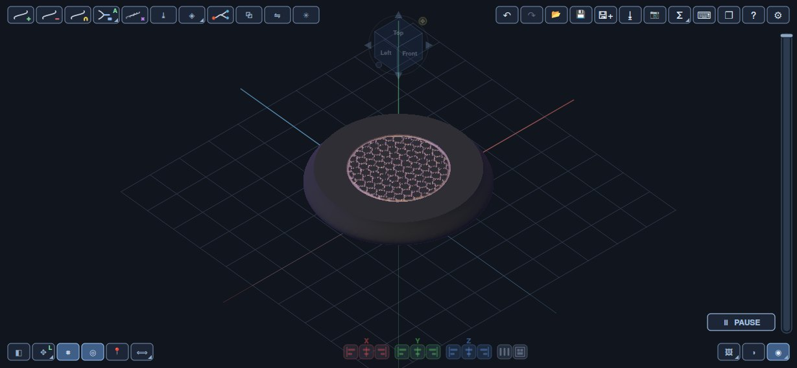
With a drawing tablet, pen pressure sets the thickness as you draw (firm is thick, light is thin). The strokes are 3D, on the surface.
The drawing is a lattice node of type "drawn", with the part as its input: a light, closed mesh, made from the strokes' distance field - no CAD booleans. The part stays on screen, see-through, to draw on. The drawing panel: - result: wires only (the part is just the guide - a cage for casting), wires, the part cut out (their inner side follows the part exactly: a tight fit, with a gap for a sliding fit or shrinkage), raised on the part, or cut into the part; - fillet: a rounded blend where strokes meet - good for the metal's flow; - tapered stroke ends, pen pressure, and fill closed loops: a loop drawn back to its start becomes a sheet on the surface inside it (for patches, not for loops that wrap all the way round a part).
The wire thickness is the lattice's wall / strut. Select the drawing and click ✎ (or draw in its panel) to add to it later.
Extracting a line from a surface
The line button (bottom right, grouped with the references and the section) takes a curve off any surface - a reference scan or one of your own objects. Click two points on the surface: the curve between them is previewed in the 3D view, and a small panel sets:
- plane - the curve lies in one plane through your two points, and this picks which: along the view (the stretch that looks straight from here - aim it with the camera), upright on the surface, or shortest (of all the planes through both points, the one giving the shortest curve).
- points - how many, ends included.
- curve - straight between the points, or smooth.
Save to library keeps it as an SVG with your other curves; Use as spine makes it the selected object's spine - and, with move the object there ticked (the default), moves and turns the object so its new spine lies exactly where the line was taken, whatever its scale and wherever it sits in a combine.
Use as scale makes the line the selected object's scale graph instead. Take it down the side of a scan - a vase, a handle - with the object's spine already in place: each point's distance from the spine, over the profile's own size in that direction, becomes the scale there, so the sweep takes on the scan's changing thickness. If the line stops short of an end, the scale is held level to it; points past the spine's ends are left out. (The line is cut by a plane: on a straight-sided cone, use upright on the surface - the view plane can just touch the surface there instead of cutting it.)
On an asymmetric object (two scale curves, one per half), each point goes to the curve of the half it lies on - and one cut fills both: the line you picked runs down one side, and the other way round the cut runs down the far side, so with the plane upright on the surface a single extraction gives both halves. The cut should run along the object's split axis (left/right or top/bottom); if it is well off, the status line warns, and if it is nearly square to it nothing is changed. A spine gets a loft piece per point, so a handful of points is usually plenty. A third click starts again.
Building it from struts
✳ build as struts (in the make-it group at the top right, with Σ, casting, machining and unfold - or File > Build as struts…) turns the model into a net of struts and connectors you can build for real - straws, tubes, sticks - with a connector that joins many struts at a point. Say how many struts; the app lays a net of near-equilateral triangles over the model, pulls every strut towards one length while the net stays close to the surface, and shows it over the model: nodes numbered from the bottom up, struts as lines (tick label every strut to see A-B on each). The panel says how equal the struts came out (a closed curved shape cannot be tiled with exactly equal triangles - the number of struts meeting at a node, 5, 6 or 7, carries the curvature; expect a few percent), the object's size, the tube to buy and the connectors by how many struts meet. Real strut length scales the whole plan so every strut is the length you actually have. Two or three lengths snaps the struts to classes instead, for a connector with no play. Save the plan writes three files: the plan as text (nodes with positions and how many struts meet, struts as pairs of node numbers with lengths, and for every node the struts that land on it), the same as CSV, and the net as an OBJ of lines.

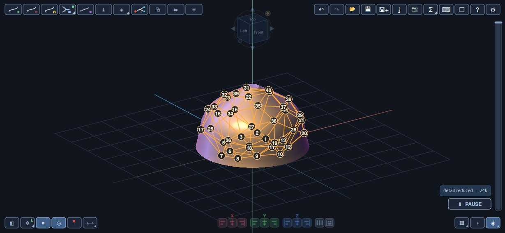
Routes
A route is a tube found between two points, around the parts. Click ⤳ (in the 3D view, or right-click in the node editor), click the start and then the end. Either can sit on a part or in free space, for example down to the floor. Shift-click points in between to make it pass through them. Esc cancels.
Its settings window opens with the tool, like the placement window (right-click ⤳ to open just the window). Set the tube radius, the plane, the clearances and the rules there before you pick the points; with no route selected the window shows what the next route starts with, and that is remembered. With a route selected it edits that route, live. The same settings sit in the inspector's route panel when the window is closed. Drag the title to move it, double-click to fold it.
Editing its points. Select the route and its points show in the 3D view: the start green, the points it passes through blue, the end orange, and a small + halfway between each two. - Drag a point to move it. It stays in the route's plane, and a point that sat on a part stays with that part. Hold Ctrl while dragging to drop it onto the surface under the cursor instead. - Click a + to add a point there, then drag it where you want it. - Click a point for more: type its position, remove it (points in between only), let go of its part, or pick all the points again.
It stays in one plane, so its spine is an ordinary spine you can edit in the spine graph. By default the plane is vertical, through both ends; it can be horizontal instead, or best: a few tilts about the line between the ends are tried and the shortest wins - that can look into a hole or round a tall wall from the side.
A plane per leg (a chain). Pick the route with points in between, then choose a plane per leg under plane: the route splits into one leg per stretch, each in its own plane (vertical through its ends, or horizontal), joined into one piece in a combine. At every corner both legs run along the line their planes share, so the tube carries on round the corner smoothly - no kink, no ball. With vertical legs that line is vertical, so the tube turns while rising or falling. Drag a corner's dot to move it (both legs follow); a setting changed on one leg goes to them all. To add or remove a corner, pick the points again.
In the route panel: - live: it is found again whenever its ends or the parts around it change. Its ends remember the part they were clicked on and follow it. Off, it is an ordinary object you edit by hand, and re-route finds it again once. - tube radius: the profile circle. - style: smooth takes any angle; square keeps to straight runs along the plane's two axes with as few turns as it can, like pipework. - wander: meanders instead of taking the tightest way, still around the parts and under the rules. another gives a different meander. - keep away: how far to stay from other geometry where possible. It squeezes closer where it has to; 0 creeps along the surface. - never closer: a hard limit. The ends are exempt, since that is where it touches. - min bend radius: straight runs are fine, but every bend is at least this round. - straight between bends: to bend the route from real tube or bar, set the bend radius to the bending die's and this to the straight the bender's clamp needs: runs too short to hold both bends and the clamp are flagged under the route. - Lay it on the surface…: the route's points joined OVER the part they sit on - the shortest way across its surface, a tube's radius off it (plus the "never closer" gap) - made of straights and bends at the bend radius, a gentle curve as several small bends. It is built as STACKED SPINES: one ordinary sweep per plane, joined in a combine, so every piece stays editable, and the pieces meet in the middle of a straight. The route itself is hidden. A tube can only approximate a surface curved two ways; the bending tool (⌒) reads the pieces as one tube and tells you how far it strays. - direction with its rules: - one way: never go back against the direction. - max lean: never lean more than this from the direction. - min slope: e.g. a drain that is never flat. - ends: at the point you clicked, or only on the plane it sits on: anywhere on its surface's plane, or anywhere at its height. The route then arrives wherever on that plane is easiest. - cling: within this distance of a surface the route may break the direction rules, creeping along it like a vine - under a lip, along the floor, into a crevasse. In free air the rules hold. - inside the part - a channel: runs through the parts instead of around them and is cut out of them: the route turns negative and joins the part it starts on. keep away is then the wall it leaves to the outside. Both ends run on a little past the surface so the channel opens cleanly. (Holes already cut into the part are not avoided yet.) - leaves / arrives: free, square to the surface, vertical, horizontal, or along or against the direction. - stay above the floor.
If no route exists under the rules, it says so and keeps the last one; relax a rule or add a point to pass through.
Drop onto the floor
↧ at the end of the align row, after distribute (or right-click > the part > drop onto the floor…): each selected object falls from where it is, as it is held, onto the floor or the objects below it. When it touches, it tips over that point or edge the way its weight takes it, and keeps going until it stands - on a face, or leaning on another object. You see it fall. It doesn't bounce, and it doesn't slide (it grips where it touches). Set turn to never and it falls straight down without turning. An object that starts too low - in the floor, or inside another object - comes straight up out of it first, and the panel says how many did. What you didn't select stays put, and the falling objects land on it; hidden objects are ignored. Gap keeps them that far apart.
Importing CAD parts and meshes
⤓ (or File > Import CAD or mesh) brings in another program's work as a part of your model - not just something to look at.
- STEP, IGES, BREP become exact CAD parts. A file with several solids asks: one object, or one per part.
- A closed STL or OBJ becomes a polygon part: an exact solid made of its flat triangles, so it booleans like anything else. Open meshes, overlapping pieces or more than 100,000 triangles are refused with the reason - import those as a reference instead.
- An OBJ or STL also offers Smooth CAD surface: it is read as a subdivision cage (as in SubD modellers) and turned into the smooth surface it stands for, as real CAD patches - it then goes into STEP like any CAD part. Add edge loops in the cage to keep an edge sharp. Any other mesh is prepared first: corners that coincide are welded (most exports store each face with its own corners), doubled faces dropped, holes closed, and a dense mesh (a scan, a sculpt, most STLs) is rebuilt as a light cage whose smooth surface is fitted back onto it. The status bar says what was done. Sharp edges come out rounded - it is a smooth surface.
An imported part has a transform and a sign and nothing else: move it, turn it, scale it, add it or cut with it. File > Reload imported part from source re-reads the file and keeps where you put it.
Assets
A starter shelf comes with the app: a ball, cone, cube, cylinder, pyramid, spring, torus and tube, each made of a profile, a spine and a scale graph you can open and change. They are copied into your library the first time the app starts; after that they are yours - rename, change or delete them and they stay that way.

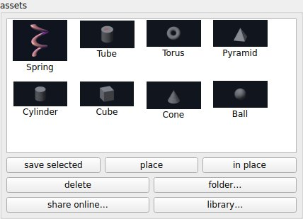

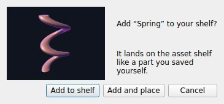

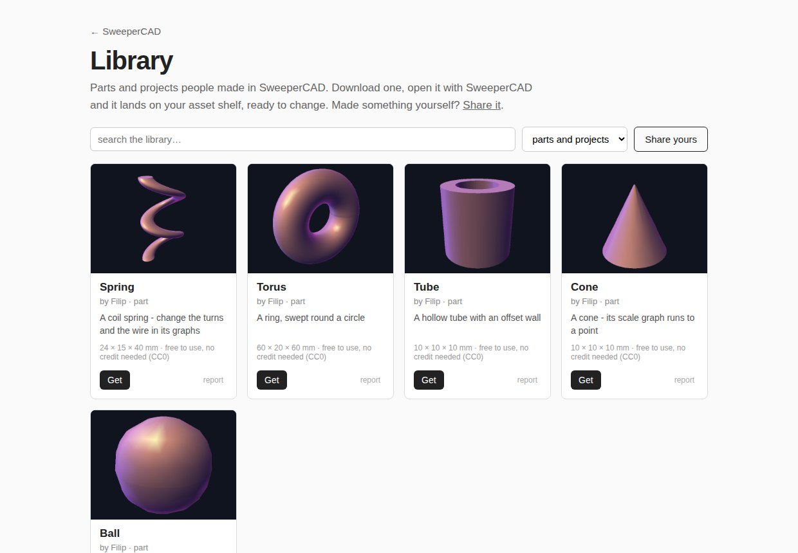
Save selected in the shelf saves the selected node with everything feeding it, with a thumbnail of that asset. The name you give it is the name the shelf shows AND the name the node gets when you place it — a second copy is numbered. Place one with a double-click or the place button; it lands with the same guides and snapping as a new object.
Assets are ordinary files. folder… opens the folder they live in, or
points the shelf at a different one — a synced folder, a stick, or one
beside a project. They live in ~/.sweepercad/assets/ unless you say
otherwise, and a folder that has gone away falls back to that.
A shared shelf stays up to date. The shelf watches its folder: when a part is added, changed or removed there - by you, or by someone else through Dropbox, iCloud or a network drive - the shelf redraws by itself. A file that is still syncing appears once it is complete. Only the shelf follows the folder: parts you already placed in a scene are your own copies and never change under you.
The online library. Parts other people made, free to download, live at
sweepercad.com/library. library… on the
shelf (or Assets → Online library…) opens it in your browser. Click
Get on a part and open the downloaded .sweeperasset file: double-click
it, drop it on the 3D view, or use Assets → Add an asset file to the
shelf…. SweeperCAD shows its picture and asks: Add to shelf, or Add
and place to drop it straight into the scene. A file that holds anything
other than shapes is refused.
Sharing a part. Select it and click share online… on the shelf (or Assets → Share selection online…). SweeperCAD saves it as an asset in your Downloads folder, shows it to you, and opens the library's share page in your browser: pick the file there, give it a name and a line about it, and send. A checking robot opens it, builds it and draws its own picture before it goes up - nothing you did not mean to share travels along. Anyone can report a part; one reported several times is taken down until it is looked at.
SweeperCAD itself never goes online. The library is a web page: your browser does the downloading and the uploading, the app only reads and writes files on your computer.
How smooth a blend came out shows on the combine's card as a small badge at its top right after each build: G0 when the seams are sharp (or chamfered) as asked, G1 when they carry ordinary tangent fillets, G2 when every blended seam was rebuilt curvature-continuous - and an orange G0 when a blend was asked for but a seam had to be left sharp or reduced; the seam table says which.
Adding a whole file to the scene. File → Add file to scene…
(Ctrl+Shift+O), or drop a .sweeper file from your desktop onto the 3D
view: its objects join what is open, alongside, as they were saved - the
file you are working in stays the current file. A name already taken
gets a number. Its reference images come along; so do the saved build
times, so a heavy addition can put the scene in draft mode.
Placing or inserting an asset. Place (or a double-click on the shelf) puts the asset where you click in the 3D view, with a light preview on the cursor and the same guides and snapping as a new object. Insert puts it straight into the scene, beside what is there, without the placing tool. Every asset keeps its finished shape and a light preview in its file, so even heavy ones (the robot, the potted plant) appear quickly; edit anything inside one and it rebuilds the ordinary way. The starter models come with theirs; an asset you save, or add from the online library, gets its own a moment later - built in the background, by this computer, never taken from someone else's file.
Putting an asset back in place. In place (beside place on the asset shelf) inserts the selected asset exactly where it stood when it was saved - turned and moved as it was, the combine it sat in included, so a nested part comes back to its spot. Assets saved before this remember no spot and are inserted as saved.
7. Checking and making
Stats and checks
The Σ icon in the 3D view opens the stats panel. It scrolls, and each section folds away by the tick in its title (and stays folded): - selected: the selected part's extent, volume, surface, weight and material cost (material and price per kg are chosen here). - direction: the direction the checks below go along.

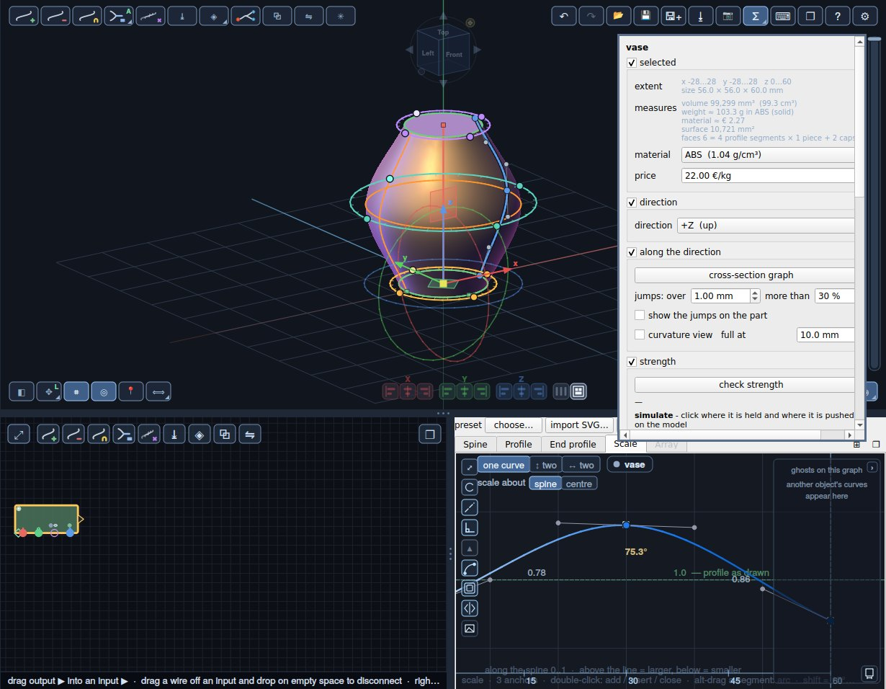

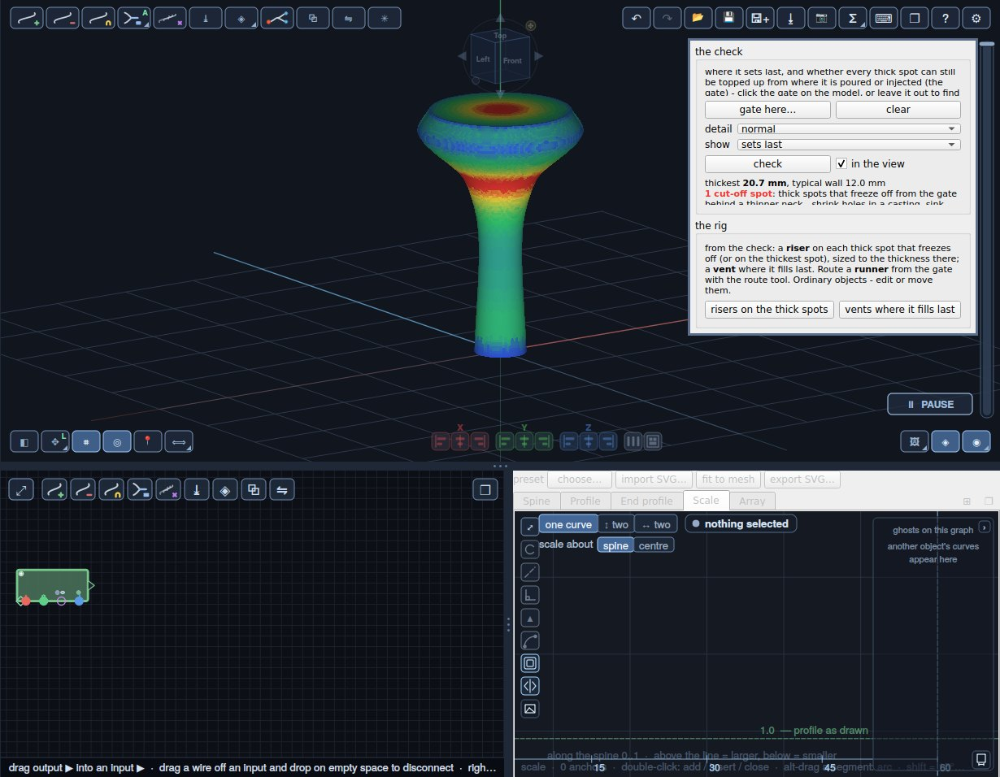
- between parts: separate parts closer than the distance you set are flagged yellow, parts that touch orange, and parts that cut into each other red (with how deep). The spots are ringed in the 3D view. It checks again after every rebuild while the panel is open, or on check now. The pieces inside one combine belong together and are not checked against each other. Parts that are interlocked - that cannot be slid apart in any straight direction (linked rings, one caught in the other's hollow) - are flagged purple. A part that only comes out with a twist counts as locked.
- along the direction: Cross-section graph: the section's area over height; hover to read it, click to cut the view there (along Z). Curvature view: the surface coloured by how it bends - bulging (convex) warm, hollow (concave) cool, flat grey, full colour at the radius you set or tighter.
- strength: quick checks of the selected part (or everything) in the material chosen at the top, along the direction view's axis - where it would be pulled apart (and at what force), how far it moves when pushed sideways at the top while standing on its far end (and the push that bends it for good), and the load on top that buckles it. The graph shows the bending stiffness along the height; the weak spot is ringed. Beam estimates: rough for stubby parts, good for slender ones. Each material has a typical Young's modulus and strength (a supplier's sheet is better).
- simulate: click held here… and click the spots on the model where it is held, then pushed here… and the spots where it is pushed (right-click or Esc ends picking); set the force in newtons (10 N is about 1 kg), its direction (into the surface, or along an axis) and the detail, then simulate. The part is cut into small bricks and solved: how far it moves, the peak stress, and the safety factor - the material's strength over that peak (2 or more: room to spare; 1-2: not by much; under 1: it would give way). Stress in the view colours it blue (relaxed), green, yellow, red (giving way); the peak is ringed. A first look, not a certificate: thin walls need a finer detail, and sharp inside corners read high.
- casting (its own window - the crucible icon in the group with Σ at the top right; the corner of the icon opens the row): where a cast or moulded part sets last, and whether every thick spot can still be topped up from the gate while it shrinks. Click gate here… and click where the metal or plastic comes in (a sprue, a gate, a feeder; pick several if the mould has them), then check. Cut-off spots - thick spots behind a thinner neck, which freeze off from the gate - are ringed red with their thickness and the neck's: shrink holes in a casting, sink marks on a moulding. Thicken the way to them or feed them from a gate of their own - or press risers on the thick spots: a riser stands on each (on the thickest spot when none freezes off), its diameter 1.3 times the thickness there, 1.5 diameters tall, with a narrower neck, as an ordinary + object you can move or resize; combine it with the part. Vents where it fills last puts a thin pin on each fill-last spot. A runner is a route from the gate (the route tool). The places that fill last are ringed yellow: where the air goes (vents) and where flows meet. With no gate picked, the thickest spot is ringed as a place for one, and every spot that would still need feeding of its own is shown. Show picks the view: sets last (thick spots red), cut off (red where it is cut off) or fills last (blue near the gate, red last). The thickest section is compared with the typical wall: a moulding sinks over spots about twice the typical wall or more. It works from the shape alone - no gravity, material or temperatures - so it is a first look.
- walls and cavities: set the thinnest wall and press check. Thin spots are dotted red on the part; closed cavities (sealed voids inside, which cannot drain or be cleaned out) are ringed with their volume. Check each part, as built (a combine counts as one), each piece, before combining (a piece thin on its own shows up even if it is thick once joined), or the selected one. It works on a voxel copy of the part, good to about a fifth of the wall asked for.
- design rules: one set of limits a design has to keep, checked on
everything shown (or the selected one) and marked in the 3D view. Start
from a set - play equipment (typical EN 1176 values) or custom,
which starts empty - and change any value; off switches that check off.
Save… writes the set to a small file (.swrules) and keeps it in the
list; Load… opens one. Give the file to the people who design for
you (a playground builder to his customers, say) and they design freely,
checking against your limits.
- No openings from ... to ...: an opening a ball of the smaller size passes through and one of the larger size does not (a body slips through, a head stays caught) - a hole in a panel, the gap between two bars, a tunnel. It is done the way the probe test is done: balls of both sizes, pushed through the gaps. An inside corner is not an opening, and two long bars trap in their middle, not at a free end. Each opening found is measured on the part itself; the size is the widest ball that sits in its narrowest part (about - measure one that is close to a limit; those within 2 mm are said).
- Guardrail above / barrier above / highest standing surface: every surface facing up at least as big as standing surface from (0.04 m² is 20 by 20 cm) is measured from the lowest point of the parts, and marked when it wants a guardrail, a barrier, or is too high.
- Thinnest material: thinner spots dotted red. No sealed cavities inside: voids closed off in a part.
- Material and it must take: the load it has to carry - pushed sideways at the top, pulled or pushed along it, or pressed down on top, standing on its far end along an axis - with a safety factor: estimated from its sections for the material (typical values).
- Nothing starts in mid-air along Z, for printing.
What the selected object measures
The stats panel (Σ in the 3D view) shows the selected part's size, volume and surface area. These come from the mesh on screen, so flat-sided shapes are exact and curved ones read very slightly low - about 0.3% on a 30 mm cylinder, 0.8% on a 10 mm one. They never read high.
Weight and material cost (now also bronze, sterling silver, 18k gold, cast iron, tough resin, beech, marble, concrete, and the plastics PC, POM, PP, HDPE, acrylic, rigid PVC, PS, PEEK, PEI, glass- and carbon-filled nylon, and casting wax). Pick a material (PLA, PETG, resin, aluminium, steel, wood and more) and the panel adds the part's weight and what its material costs, from the price per kg beside it. The prices are typical starting values; type what you pay and it is remembered for that material. Both are for a solid part: a 3D print with infill weighs and costs less, and the price is the material only - no machine time, and not what a print or CNC service would charge.
Machining (G-code for a CNC)
The machining icon (the hammer-and-pick, in the group with Σ at the top right - its corner opens the row) turns what is selected (or, with nothing selected, everything shown) into toolpaths for a 3-axis machine cutting from the top - a router or a mill on GRBL, LinuxCNC or a generic controller.

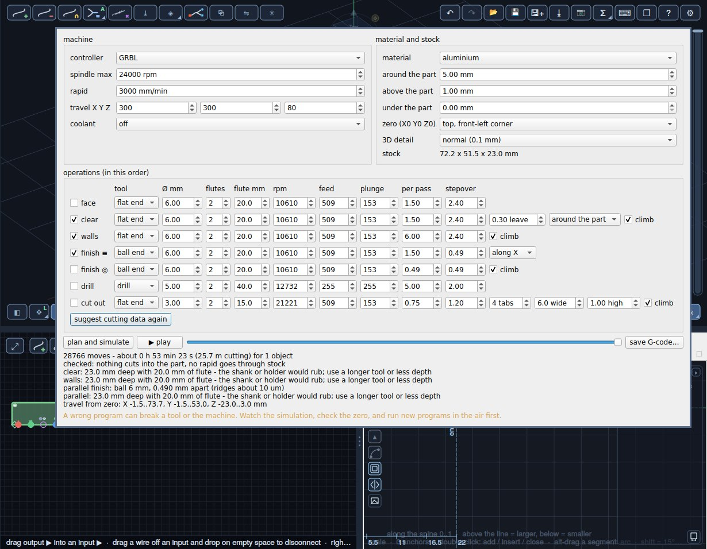
- machine: the controller, the spindle's top speed (on GRBL the S value is scaled to $30 - set them alike), the rapid rate (for the time), the travel (the program is checked against it) and coolant.
- material and stock: the material sets the suggested cutting data; the stock is the part's box plus what you give around, above and under it. Zero (X0 Y0 Z0) is where you zero the machine: the stock's top front-left corner, its top centre, or its bottom (the bed).
- operations, in this order, each with its own tool: face (the stock top down to the part), clear (level by level, everything that is not the part - around the part, or pockets only inside its outline - leaving a skin on the walls), walls (the walls to size), finish ≡ (3D: passes that follow the surface - along X, along Y, or both), finish ◎ (3D: contours at constant heights, for steep walls; the two together cover a curved part), drill (round vertical holes the drill fits, pecked; holes of another size are cleared instead) and cut out (the outline through the stock, with tabs that hold the part - last, so the part is held for everything before it). The finishes take a ball end (or a flat one); for a ball the stepover is suggested for ridges of 0.01 mm between passes. Each row suggests the spindle speed, feed, plunge, depth per pass and stepover from the material and the tool; change any of them. Climb milling is the default; untick it for conventional. Cutters ramp into material along their path (a helix on a small loop) and only plunge into air.
- 3D detail (under the stock): how finely the surface is read for the finishes - normal (0.1 mm) or fine (0.05 mm, a few times slower). The finishing passes never cut into the part; they leave about that much more on curved and steep areas, so fine gets closer.
- plan and simulate draws the paths on the part (a colour per operation, rapids dashed) and the stock as they leave it; play or drag the slider to watch it cut. It is checked: a move that would cut into the part, or a rapid through stock that is still there, is drawn red and reported, as is a program that needs more travel than the machine has or a cut deeper than the tool's flutes.
- save G-code… writes the program. For GRBL that is one file per tool (GRBL has no tool changer; zero Z again after each change), with only what GRBL understands - no canned cycles. Other controllers get one program with tool changes.
A wrong program can break a tool or the machine: watch the simulation, check the zero, and run a new program in the air first. The cutting data is a conservative starting point for a hobby machine, not a promise.
Unfold — lay it out flat to print and cut
The ✂ icon in the make-it row (Σ · casting · machining · unfold) opens the Unfold window: the selected part laid out flat at true size, in pieces, on pages to print — or as one full-size SVG for a cutting plotter or a laser. Pick the material first; it decides how the part is flattened and what is drawn around the pieces.

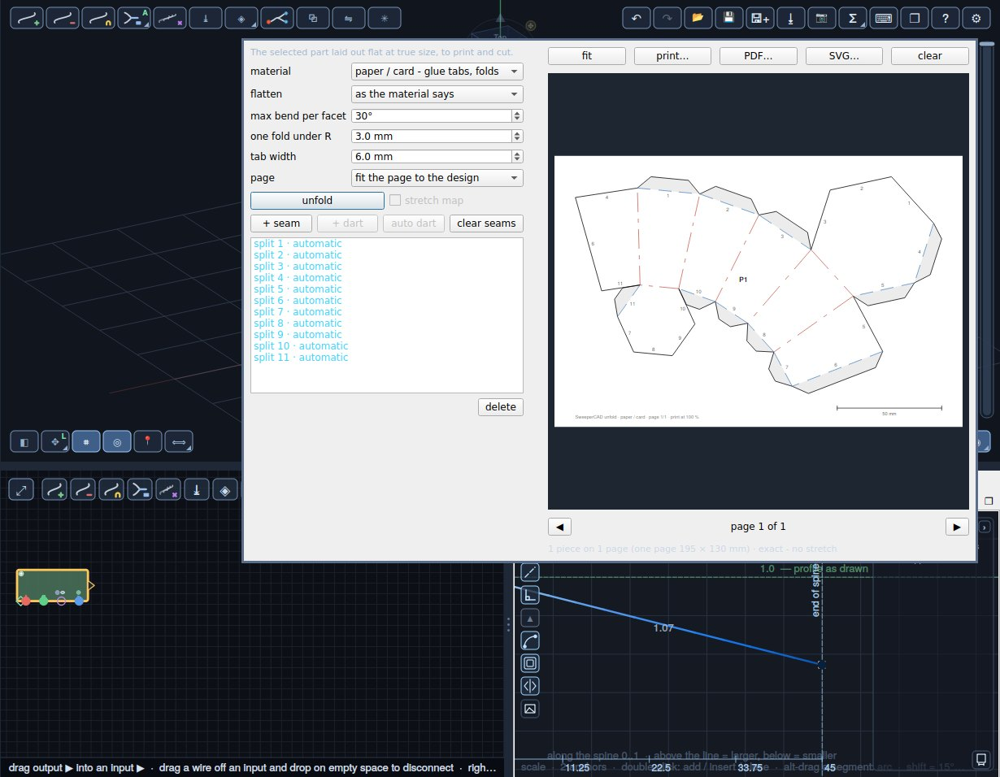

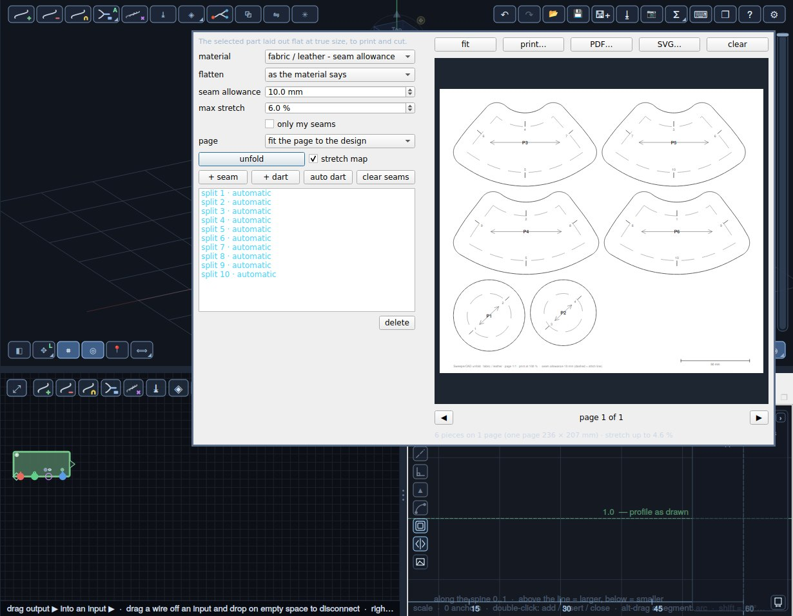
It works on the same quad mesh as the quad export: every four-sided face of the part is a regular grid — on a sweep the rows follow the spine and the columns go round the profile — so seams, darts and the automatic splits run along grid lines, never across a quad.
Exact (paper, card, sheet metal, foam): every face keeps its true shape, nothing stretches. The faces are unfolded hinge by hinge, and where a piece would overlap itself it is cut instead. Curved faces come out as strips: max bend per facet decides how many — a 90° fillet at 30° per facet is three strips (three small chamfers). A straight fillet smaller than one fold under R is drawn as a single fold along its middle; its strip still gives the material its true length.
Stretch (fabric, leather, felt): each region between sharp edges is flattened as one piece, with a little stretch where the surface curves both ways. Tick stretch map to see it on the part: blue is true, red is the max stretch you allow. A piece that would stretch more is split in two — first along the part's own faces (on a sweep those run along the spine, so a vase comes out as panels), then along the face's own grid lines — until it fits. Set max stretch to 0 to keep pieces whole and place your own:
- + seam: click points on the part, as many as you like. The button turns green and reads ✓ end seam — press it to finish (a right-click or Esc does the same). Each click snaps to the nearest grid point (a cross marks it) and the white dashed line shows the path the seam will take, along the grid lines, before you finish — two points on the same row or column give a straight seam along it. Seams work in exact mode too — that is how you choose where a paper net is cut.
- + dart: click where the dart opens (on an edge), then where its tip goes. The slit runs between them and opens into a wedge when the piece lies flat, taking up the fullness. Click only the tip and press ✓ end dart for a dart from the nearest edge. The dart button stays on for the next dart until you press ✓ end dart.
- Auto dart tries a dart tip at three depths from the worst spot and keeps the one that lowers the stretch most — or says that no dart helps there (then a seam, or max stretch, will).
- The list under the buttons holds your seams and darts: select one to see it white on the part, untick it to leave it out without losing it, delete to remove it, clear all for all of them.
The seam list shows every seam: yours (seams, darts, splits you kept joined) and, in cyan, the splits the unfolder made itself — numbered as on the paper. Select one or more (ctrl / shift) to see them white on the part; untick one of yours to leave it out; delete removes the selected ones. Deleting an automatic split keeps it joined (it shows up as kept joined; delete that to let the unfolder cut there again). Paper and metal still have to cut a closed part somewhere to open it — keep a box edge joined and the cut moves to another edge; if it can't (it would overlap), the status line says so.
Only my seams (fabric / stretch): no automatic splits at sharp edges or past the max stretch — the pieces are exactly what your seams close off, and the stretch map shows what that costs. A closed piece still gets the one cut it needs to open.
Seams, darts and joins are saved with the project file.
In 3D, cyan lines show where the pieces split, magenta your own seams and darts (the one selected in the list white), and a white dashed line the path of a seam while you place it. Closing the unfold window clears all of it — the lines, the stretch map and the pages; your seams and darts stay with the part and come back when you open it again. Deleting the part clears it too.
What each material draws:
- paper / card: cut lines; folds red dash-dot (mountain — folds away from you, the printed side out) and blue dashed (valley); a glue tab on one side of every seam, and the same number on both sides.
- sheet metal: no tabs; bend lines with their number, direction and angle (1: down 90°). The model is read as the outside of the part: set the thickness, the inside bend radius of a sharp fold and the K-factor (where the neutral line sits, 0.33–0.45 typical). Each bend takes off its bend deduction, so the flat is cut to the neutral line and the bent part comes out at the size you drew. A fillet you modelled counts as the bend, its radius as the outside radius. Walls unfold from the largest panel (the base), as a press brake makes them — see Sheet metal for the shop below.
- fabric / leather: the cut line is the piece plus the seam allowance; the dashed line is where to stitch. Notches and numbers on matching seams, and a grain line along each piece.
- foam / felt / laser: clean cut lines, with an optional kerf (the cut line moves out by half the cut width).
Sheet metal for the shop. With sheet metal chosen, the flat is made ready to cut and bend:
- metal: steel, galvanised, stainless, aluminium 5052 / 5754, 6061-T6, 1050, copper, brass, or other. It sets a starting K-factor and what the checks use: the tightest inside radius the metal takes (6061-T6 cracks on tight bends), its springback and its strength. Starting values — test on an offcut.
- bend reliefs: a bend that ends against material tears or bulges there, so it gets a slot as wide as the sheet, through the bend zone and one thickness beyond — square or round-ended. Where two bends meet at a corner there is one corner relief over both.
- corners: where two flanges meet (a tray's corner) both walls would fill the same corner of the outside model. Open stops both short by the thickness plus the corner gap; closed lets the larger wall run through and stops the other at its inside face — ready to weld or rivet; as modelled leaves them.
- + hem: click outside edges of the part; each is folded back flat on itself (hem length, outside, 4 × thickness when 0; a hem gap above 0 makes an open hem, flattened onto a spacer).
- + open face (any exact material): click a face to leave it out — the lid of a box, so it unfolds as an open tray. It shows in the seam list; delete it there to bring the face back.
The status line gives the number of bends, the die, the reliefs and the first thing to check; hover it for all of them. DXF… writes the flat at true size in millimetres — outlines on layer CUT, bend lines on BEND_DOWN (red) and BEND_UP (blue), the numbers on TEXT — for a laser or plasma shop, CAD, or the brake's own software (it works for paper, fabric and foam too). Brake sheet… writes a PDF (or a CSV table): the flat with the bends numbered in the order to bend them (hems and outer lips first), and per bend the angle to bend by — springback included — which way the flange goes, its length, the back gauge (flat distance from the bend line to the edge against the gauge), the outside flange, and the force. The die is the usual one for air bending (about 6 × thickness, the nearest standard V), and the sheet says what to check before you bend: a radius too tight for the metal, a flange too short for the die (with the die that fits), a hole too close to a bend, a U whose walls may hit the top tool, and the inside radius that die really gives.
The page. Pieces are laid out at true size on A4, A3 or Letter, on a custom size you type (width × height in mm — a cutting mat, a plotter's roll), or with fit the page to the design: one page just big enough for all the pieces, the right thing for an SVG for a laser or a single sheet from a print shop. On the page: the wheel zooms about the cursor, a drag moves it, a double-click shows the whole page again. The toolbar above it — and a right-click on the page — has fit, print… (through your printer's dialog, always at 100 %), PDF…, SVG… (one full-size sheet, for a cutting plotter or laser) and clear, which empties the pages and the lines on the part but keeps your seams and darts (clear seams removes those). The SVG opens straight in the cutter's or laser's own program (Cricut Design Space, Silhouette Studio, ScanNCut, LightBurn, Inkscape): one colour per job - black cut, red mountain and blue valley folds (set those to score or perforate), green the numbers (draw them with a pen, or hide that colour). The lines are solid hairlines, the numbers outlines, and there is no page frame or tab outline to cut by mistake. After printing, measure the 50 mm bar on the page to check the printer did not scale it. A piece bigger than the page gets a page to itself and a note — use a larger page or the SVG.
Stacked sheets
The part as layers of cardboard, plywood or acrylic, cut and stacked. Select the part and click the ☰ icon in the make-it group.

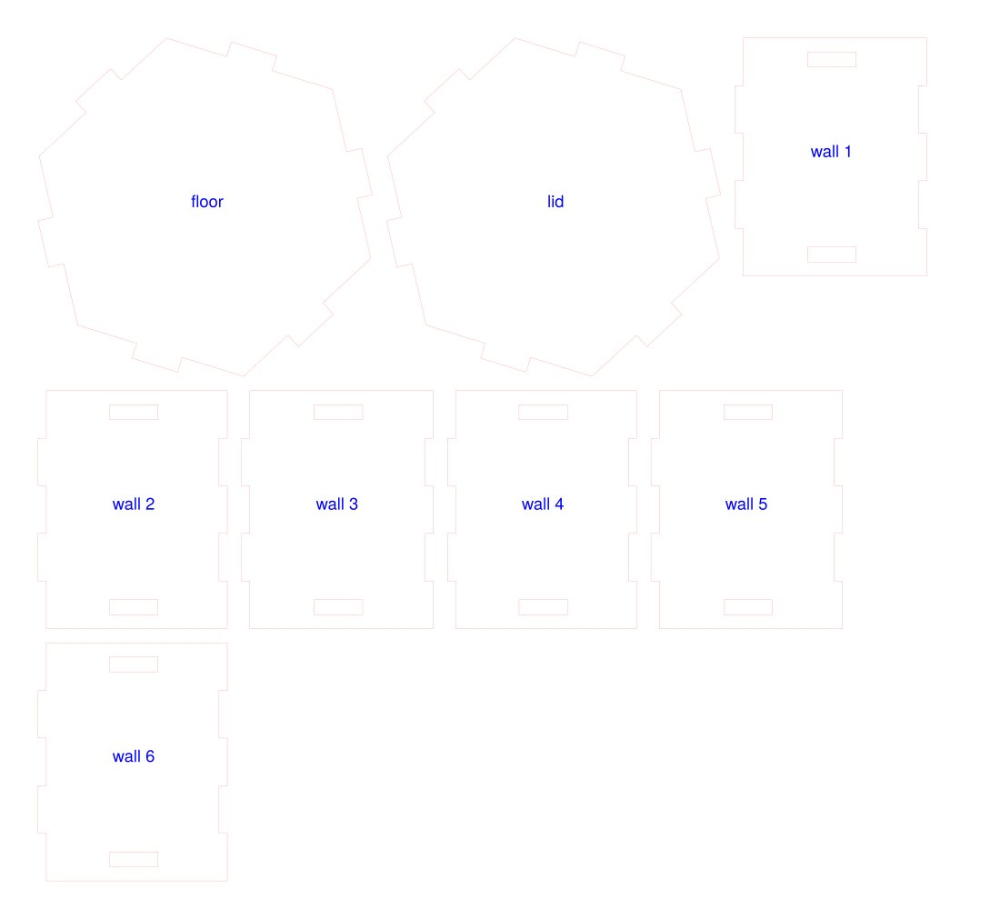

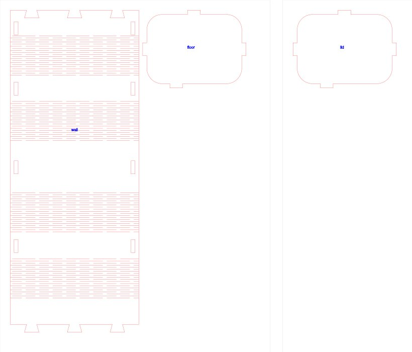
Set the thickness of your sheet and the direction to stack in. Each layer is cut through its middle, or never smaller than the part (outside - sand down to the shape) or never bigger (inside). Kerf grows the outlines by half your laser's or knife's cut width. Holes in a layer are kept; a layer that falls apart into islands gets each piece numbered (12a, 12b).
Lining the layers up, any combination: key slots and key strips - a slot one sheet thick in every layer, and flat strips cut from the same sheet that slide through them and lock the stack; dowel holes for a dowel or skewer; and the next layer's outline drawn on each layer, as a gluing guide. Keys and dowels sit deep in the material; where the part changes too much for one to pass every layer, they run in overlapping sections that link up.
Waffle (how it is built): instead of stacked layers, upright slices across X and across Y, every so many mm, that slot together into an open lattice of the part - no glue. Where two slices cross, one gets a slot from the top and the other from the bottom, each half as deep as their shared height; every slot is labelled with the slice that goes into it.
Box (how it is built): for a part that goes straight up - any outline, the same from bottom to top (a prism). You get a floor (and optionally a lid) with tabs that go through slots in the wall, set in from the edge by the amount you choose, and the wall unrolled along its centre line, so it has the right length once bent. Where the outline has a sharp corner the wall is split into panels with finger joints (an odd number up each corner), sized to the corner's angle so the outside faces meet - a laser cuts square, so off a right angle there is a hairline wedge inside the corner, or a sliver to sand flush. Corners sharper than about 70 degrees or flatter than about 150 (a triangle, a very shallow bend) are not jointed but bent: the corner is rounded a little and the wall bends round it on a hinge. Tick bend round every corner to do that everywhere - one piece of wall, no finger joints. Where the outline curves, the wall gets a living hinge - rows of slits, offset like brickwork, so the sheet bends. With no corner at all (a round or rounded box) the wall closes on itself with dovetails in its straightest place. Set the slit length, the bridge between slits and their spacing for your material - closer slits bend tighter; plywood likes a spacing of about half its thickness. You are warned when the outline curves tighter than the tightest bend, when the walls are not straight, and when there is no straight stretch for tabs (then glue the floor in). A wall too wide for the page is turned a quarter to fit. The hinge slits are cut lines (red) like the outlines.
The preview shows the stepped stack over the part, with the number of layers, pages and the sheet area. Save PDF gives pages at true size to print and cut by hand (with the 50 mm bar); Save SVG one file for a laser cutter or cutting plotter - red to cut, blue to engrave (the numbers), green the guides. It opens straight in the laser's own program (LightBurn, LaserGRBL, xTool Creative Space, the Glowforge app, or Inkscape printing to an Epilog or Trotec): true size in mm, hairline cut lines, the numbers as outlines so no font is needed, and no page frame. Give each colour its own power and speed there. Save DXF gives the same sheets for a plasma cutter, waterjet, laser or CNC router: true size in mm, outlines and slots on layer CUT, guides on GUIDE, the numbers as text on ENGRAVE.
Lathe
A part that is round about a straight axis - a round profile on a straight spine shaped by its scale graph, a revolve, an imported turned part - can be turned. Select it and click the ⌀ icon in the make-it group. The axis is found by itself (the part is sliced along it and every slice must be a circle); a part that is not round says so.

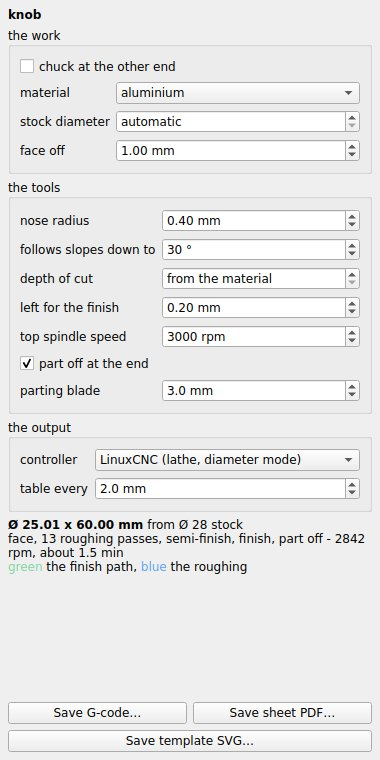
Lathe coordinates: Z along the axis, 0 at the free end (the tailstock side), minus toward the chuck; X the diameter. Tick chuck at the other end to hold it the other way round. Set the material, the stock diameter (automatic: the part's largest diameter plus 2 mm), and how much to face off the end.
The tools. The turning tool's nose radius (the program gives the usual imaginary tip, touched off on the diameter and on the face, so tapers and curves come out true without nose compensation). Follows slopes down to: where the part narrows toward the chuck behind a bulge, the back of the tool hits the work - it can follow a slope only down to about its back clearance (a 35° insert: about 30°). What it cannot reach shows red and is reported, to finish with a neutral or left-hand tool. The depth of cut per roughing pass (or from the material), what is left for the finish, the top spindle speed, and part off with the blade width.
The program: face the end, rough in straight passes (entering a pocket gently), one semi-finish pass that follows the profile, the finish pass, then part off. Plain G0 and G1 only, so every controller reads it: LinuxCNC and grblHAL in diameter mode, a generic / Fanuc-style version, and plain GRBL with X as the radius. Speeds and feeds come from the material and are conservative; watch the first run in the air.
Save G-code… for a CNC lathe. Save sheet PDF… for a manual lathe: the diameters every few mm from the free end (and at every shoulder), and the profile template at 1:1 with the 50 mm check bar. Save template SVG… gives the same template for a laser cutter or plotter - hold it against the work as you turn. Save template DXF… is the template in mm, to cut it from sheet on a plasma cutter, waterjet or laser.
Bending
A tube or a wire is straights and bends. Select a swept tube - or several spines that continue each other (stacked spines, a route) - and click the ⌒ icon in the make-it group. The centre line is read from the spines, the diameter measured from the part (or typed), and you set the wall (0 for solid wire or bar), the material (it gives the springback: how much a bend opens up afterwards - one test bend tells the true number) and the bender: the die radius (its centre-line radius, CLR; the pin radius on a wire bender), the shortest straight the clamp can hold, and the tolerance.

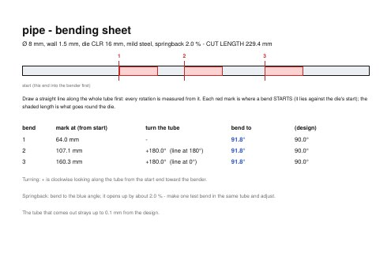
How it is worked out: a corner drawn sharp means "bend here" - the die rounds it. A curve as tight as the die is one bend; a gentler curve becomes several small bends close together, as many as the tolerance needs. Where the straights would meet are the bend points (yellow); the tube that comes out - those points rounded at the die radius - is drawn green over the design, and how far it strays is reported. Straights too short for the clamp show red, and you are warned when bends overlap, when a curve is drawn tighter than the die, and when the die is tight for a thin wall (wrinkles - use a mandrel).
For a flat bar choose that section: the part is read slice by slice - its width and thickness, and how it lies along the spine - and every change of direction is one of three steps: a flat bend (across the thin side, the easy way), an edgewise bend (across the wide side, the hard way - roll it; tight ones are flagged because they buckle) or a twist about its length. With holes along the bar (pitch, first hole, diameter) every bend or twist that reaches into a hole is listed - bend on the bridges between holes, or the holes go oval. The sheet shows the bar straight with its zones and holes, then the steps in order: where to start, what to do, over how long.
For a square bar choose the section: it bends over its faces only, so between bends it may only turn in quarter turns - bends that would need it twisted are listed.
Every bender is told the same three numbers per bend: Y feed (the straight before the bend), B rotate (from the last bend's plane), C bend (the angle to bend to, springback included). Save table CSV… gives them, with the design angles, the arc lengths and the XYZ of the bend points - what bender software imports. Save bend sheet PDF… is for a manual bender: the cut length, the tube drawn straight with a mark where every bend starts, and per bend where to mark, how far to turn the tube (draw a line along it first) and the angle to bend to. Save wire bender G-code… drives a DIY three-motor wire bender: X feeds, Y turns the wire, Z swings the bend pin and back - set its units per mm and degrees per unit.
The eggshell mould
A thin breakaway shell around a part: print it, cast into it, and crack it away like an egg. Select the part and click the ⬯ icon in the make-it group (or add a lattice and choose eggshell (breakaway mould)).

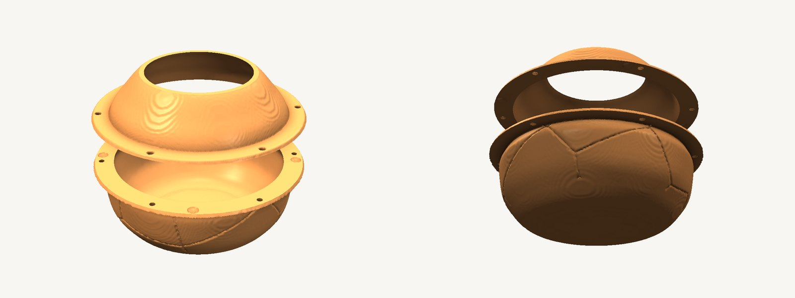

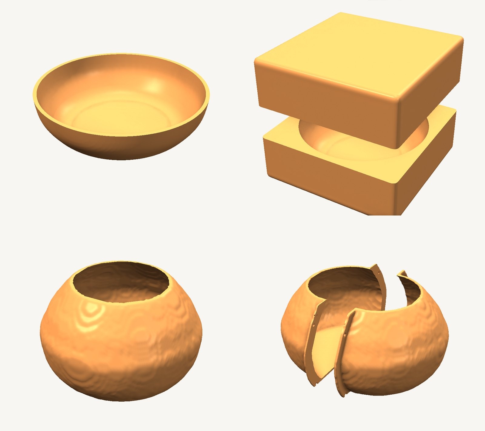
thickness is the wall, count the number of shards, depth how deep the crack grooves go from the outside, crack width how wide they are (automatic is a third of the wall), seed another crack pattern. The inside of the shell is the part's own surface turned inside out, so the cavity is exactly the part; the grooves always stop short of it. Add a pour funnel or flanges as ordinary objects, and export the shell as STL.
The mould settings turn the shell into a mould you can open and use again:
- add pour funnel puts a funnel on the part: a sprue (its diameter) rising from the middle of the part's top, sunk 1 mm into it, that opens into a cup with walls leaning 30 degrees. The funnel is the reservoir too: the cup holds the % of the part's volume you set (15 % by default), the metal or resin that keeps feeding the casting while it shrinks, and the place you pour into. It is an ordinary object, fused to the part in a combine that becomes the eggshell's input, so you can move it or drag its graphs like any sweep; the mould is opened at the top so the cup comes out open. Press it again with another diameter or share and the same funnel is resized.
- open at the top cuts the shell just below its very top, so whatever reaches the top comes out open: a pour funnel, a sprue, risers or vents. Fuse those to the part first (the casting check's risers and vents buttons place them) and make the eggshell of the result; the cavity holds line gives the volume and weight to pour, with them included.
- cut across X, Y or Z cuts the mould on a plane square to that axis, through the middle of the part or so many mm from it, and tilted and turned to any angle (the two degree fields). Up to three cuts, each on the pieces the others made - two crossing cuts give four pieces. ◰ next to a cut places it by hand, with the section plane: the plane jumps to the cut, and as you drag and turn it with the gizmo the cut follows - anywhere, at any angle (the row then says cut on a placed plane). Click ◰ again to leave it there. Pie cuts it into 2 to 12 pie pieces round an axis through the middle of the part (Z, X or Y, the first cut turned where you like), each pulled straight outward. Each half is closed and ready to print. A flange stands out along the cut, both halves together twice the wall thick (at least 4 mm), with holes through it for pins, bolts or clamps (3.2 mm takes an M3 bolt; 0: none). The flange stays within the mould's height: it never reaches below the shell's lowest point, so a mould with a flat bottom stands on it, nor over where it is opened - untick it to run the flange all the way round. Flange 0: no flange at all. Pieces apart lays them out with a gap so you can see and export them.
- Registration lines the pieces up: on every cut, low domes stand out of one side's flange, between the holes, and the other side has their hollow counterparts, sockets 0.2 mm larger (0: none). A dome that would not sit fully on the flange (over the opening, off its edge) is left out.
- Crack only where it locks (with a split): each piece is pulled straight off, away from the cuts around it. Where the part hooks into a piece - an undercut, its surface facing back against the pull, like a belly wider than the cut above it - that half gets the crack grooves there, so it breaks away just where it must; everywhere else it lifts off whole. Crack everywhere scores the whole shell, and the crack depth at its least gives no grooves at all.
The cuts are made on the shell itself, exactly: the cavity stays the part's own surface, and the flat faces of the cut are closed watertight.
More from the mould panel:
- add vents finds where the air is trapped when you pour from the top - every high point that is not the top itself: the tip of an ear, a tower lower than the rest, a flat ceiling - and puts a thin rod (its diameter) from each straight up to the funnel's top, so they come out open with it. One vent per high area. A high point with part above it gets none (a straight vent would run back into the part) and is counted, to vent by hand. Add the funnel first; when you move or resize it, the vents follow.
- show (next to the cracks) colours the part red where it locks into its piece - an undercut against the way that piece is pulled off - and says how much of the surface that is. It follows the cuts as you change them. With no cut at all, everything that faces down locks: a closed shell can only be broken off. place cut 1 where it locks least slides the first cut along its direction (its tilt and turn kept) to where the least of the part hooks in.
- engrave what it holds on the flange cuts the cavity's volume and its weight in the material chosen ("516 cm3 4.5 kg bronze") into the outer face of the first flange, between two holes, bent along it.
- hollow, wall: a core for a hollow casting. The core is the part that far in from its surface, with a print - a peg of the diameter set - from inside it down through the bottom and 8 mm out. The print's socket is in the mould, so the mould holds the core in place; the core is laid out in front of the mould, to print or to make in plaster. The casting gets a hole where the print was.
make chooses what is made round the part:
- eggshell - the breakaway or split mould above.
- cradle - a holder shaped to the part, for painting, gluing, soldering or engraving: the shell, fit mm clear of the part, up to the share of its height set (up to), with a flat bottom to stand on.
- fitted box, in two halves - a box with rounded corners, room mm of wall round a cavity shaped to the part (fit clear), cut in two across Z unless you set other cuts, with domes and sockets in the cut faces. For storing or shipping the part.
- pour box for silicone - walls that follow the part, room mm off it (the silicone's thickness), with a floor the part stands on and open at the top, ending just under room over the part. Following the part saves silicone; the line underneath says how much it takes. Cut it like any mould to get it off the silicone block.
- pour box for plaster (slip casting) - the same, starting at 25 mm of room: a case to pour a plaster mould in, round a master, for slip casting ceramics. Cut it in two or more, with domes, so the plaster mould comes out in pieces.
add a support box puts an open box round the mould, 15 mm clear of it, wall 3 mm: stand the mould in it and fill round it with sand or plaster, so a heavy pour does not burst a thin shell. It is two plain objects (an outer box with an inner one cut out), so resize it like any object.
Lenses for glasses (a study tool)
Not medically approved. These are lens shapes for designing a frame around - never make lenses from them to look through. Real spectacle lenses need optical material and are medical devices: an optician orders them from a lens lab.
The ⚭ icon in the make-it group opens the lens panel. Type the prescription per eye - sphere, cylinder, axis, PD (from the nose line to the pupil), prism and its base, and the fitting height (fit h: the pupil above the bottom of the lens shape, as the optician measures it with the frame on - the optical centre goes there) - and the lens and fit: material (polycarbonate and Trivex do not shatter), front curve, minimum thickness, eye-to-lens distance (and the distance at the eye test, so the power is corrected), tilt and face wrap.
Every change redraws both lenses in the 3D view a moment later, with the pupils marked. The face check turns each lens green when it fits and red when it does not, with the numbers: too close to the face, or the temple corner sticking out. It measures against a face curve, or against your own face scan (select it and click use the selected object as the face).
The lens shape is how the optician cuts the lens: round, oval, rounded rectangle, cat-eye, or your own outline (draw it as an object's profile at real size, the temple side to the right, select it and click take the outline). Width A, height B and the bridge DBL, and the edge: a V-bevel for a full rim, a groove for a half rim, flat for rimless.
Fit to the face - nose and head. The pupil is rarely in the middle of the lens: the box (A wide) starts DBL/2 from the nose line and the pupil sits at the PD, so it usually lands a few mm towards the nose, and the fitting height puts it above or below the middle. The panel says by how much. Then the measurements for the frame itself: the nose - its width where the pads sit, how high its top (where the bridge rests) is above the pupils, how far down the pads touch, how far it stands in front of the eyes, and its splay and frontal angles (how its sides open towards the back and downwards); and the head - its width at the temples, above the ears, and how far back and how high the ears are, and the hinge height (where the temples start on the frame front, above the pupil line). With show the guides they are drawn live in the 3D view and follow every number at once: the lens boxes and pupils (grey and blue), the nose as an orange wedge with the bands where the pads rest, and the head width with the temples' path to the ears (purple). Design the frame against them. Below the numbers the panel says what they mean - how much room there is for the rim at the nose, how wide the end pieces get, how long the temples are - and warns when something will not fit. Fit the lenses to the face sets A, B and DBL for these measurements while the pupils stay exactly where they are: DBL becomes the nose width at the pads plus the frame beside the nose on both sides; A grows out towards the temples, but only until the pupil is 3 mm from the lens centre - the limit an optician aims for, so the lenses stay thin and even and fit the blank - and wider end pieces (at least end pieces at least) take the rest of the head width; B keeps the shape's proportions and the fitting heights keep each pupil's height in its lens. The panel also says how big a blank each lens needs (the farthest corner of the shape from the pupil, twice, plus 2 mm) and warns when that is more than the blank diameter. The nose is a ridge, not a block: from its top it runs down and comes forward at the nose slope (its angle from vertical, seen from the side), and its sides open backwards at the splay angle (and a little more downwards, the frontal angle) so that it is exactly as wide as you measured where the pads touch it. Tick the nose runs on through the frame front to see its outline carried forward through the frame - where the frame crosses it, it has to stand in front of the nose. Shape the lenses round the nose (on at first) pushes each lens's nasal side out of the nose wherever it would come closer than lenses clear of the nose by - usually the lower inner corner, as real frames do; the cut lenses, the cutters, the data sheet and the OMA file follow it. Without it the panel warns how far the lenses reach into the nose, and a red cross marks the spot. Check the selected frame against the nose measures how far the objects you selected - your frame - reach into the nose, and marks those spots red. Also add the guides as objects makes the nose as a negative block (in a combine with your frame it keeps the frame off the nose), the temples' paths as thin rods and the ear points. While the lens panel is open, these measurements also go with the prompt in Make it with AI, so a frame an AI writes leaves room for the nose.
Add to scene makes the cut lenses as parts, with their 3D edge. Options add: cutters for the frame (the lenses grown by a clearance, already negative - put them in a combine with your frame and they cut the opening and the groove), the frame surface (a curved sheet through the front of both lenses at your wrap - a base for the frame front) and markers at the pupils.
Save data sheet writes an A4 PDF with the prescription, the lens and fit, the thicknesses, the frame numbers and both shapes at true size (with a 50 mm bar to check the print), and beside it an OMA shape file - the format optician edging machines read. Check it with your optician's software before relying on it.
Exporting
- STEP — exact surfaces, no meshing. Use this for other CAD. Flat faces are written as true planes, so they can be mated to and sketched on at the other end.
- IGES — exact too, for older CAD that will not take STEP.
- BREP — exact, OCCT's own format: FreeCAD, CadQuery and anything else built on the same kernel read it with no translation.
- STL — triangles, for printing, milling, and most fabrication.
- 3MF — the newer printing format: it states millimetres, keeps the mesh indexed (so a slicer can check it is watertight) and carries colour.
- OBJ — triangles, with a material per object colour - or quad patches: every CAD face becomes its own grid of quads on the true surface, watertight, like MoI's output. Chosen in the export dialog, with an aspect ratio limit and avoid smaller than.
- PLY — triangles with a colour on every vertex (MeshLab, Blender).
- GLB — glTF for the web, Blender and the system viewers, with vertex colours. It is converted to metres and Y-up, as that format requires.
UVs, at real size. OBJ and GLB carry texture coordinates where one UV unit is 100 mm everywhere, so a tileable material is the same size on every part - good for renders. Quad patches get UVs along the surface (around the profile, along the spine); triangles are box-mapped.
Polygon parts and CAD files. STEP, IGES and BREP are exact surfaces, so an imported mesh has no place in them. With polygon parts in the model the export asks: Leave them out (a cut made by a mesh is left out too, and the status line says how many parts were skipped) or Include as faceted solids (every triangle becomes a flat CAD face).
Lattices are always exported at full detail, whatever the view shows. They go into STL, OBJ, 3MF, PLY and GLB as meshes.
A picture of the model. The camera icon (📷, top right) saves a PNG of the model as it is shown - any view mode, chrome included - at 1× to 4× the view's size, with a transparent, the view's own or a white background, and trimmed to the model if you like. Only the model: no grid, gizmo, dials or selection. Made for sharing.
With reference objects. When a reference (a scan, an imported mesh)
is loaded, the export menu offers + with reference objects. Ticked,
every visible reference is written as its own STL next to the exported
file - part - ref scan.stl - in the same coordinates, so any other
program loads them in the right place relative to each other, as
separate bodies ready for a boolean.
Mesh settings, and a look first. Exporting anything that has to be meshed — STL, OBJ, 3MF, PLY, GLB — opens a small panel: a slider from draft to very fine, triangles or quad patches where the format takes them, welding, and roughly how many triangles and megabytes that will be. Preview in the 3D view draws the actual mesh at those settings, so you see the faceting before you commit; closing the panel puts the model back. STEP, IGES and BREP carry the exact surfaces and need none of this.
A curve on paper. The small sheet icon in a graph's bottom-right corner - and Export curve as PDF… in the File and export menus - draws that graph: the curve at a stated scale (1:1 where it fits, otherwise a proper drawing scale), its overall width and height, every rounded corner and every arc labelled with its radius, the points marked, the origin shown, and a title block with the object, the graph, the scale and the date. Vector, so it stays sharp at any zoom - for the workshop, for checking, or to keep with a project.
When a sweep would fold. The spine turns red and says the bend is too sharp for the profile; the profile turns amber and says what it was built at. Both clear as soon as the profile fits the bend.
When a sweep would fold. A profile that reaches further than the spine's bend is sharp would pass through itself on the inside of the curve. The app scales the profile down until it clears - keeping its shape, only smaller - and says so in the status line. To keep your intended size, widen the bend, slim the profile, or use the scale graph to pull it in only through the curve.
Separate bodies. After an export the status line says when the file holds more than one body: a note when you exported several objects together, a warning when one object or combine is itself in pieces - parts that do not quite touch, or a union that did not fuse - which a slicer would print as loose parts. A hollow part (a closed cavity inside) is one body and is not flagged.
Colour in exports. Every face takes the colour of the object it came from — end caps included, and also after a fillet or a chamfer. The fillet or chamfer surface itself belongs to neither object, so it is neutral grey. A combine given its own colour is that colour throughout.
After an export, the status line offers Get this made: a link to sweepercad.com for having the part fabricated — printed, cut, milled or otherwise. Opening it is a choice; the app itself never connects to anything.
What gets exported
Every top-level result, not only a final combined one. Three objects you never combined export as three solids in one file — they are all part of what you made.
- Hidden objects are left out. Hiding is how you say "not part of this", so it applies to export too.
- Locked objects are included. Locking only stops you selecting or dragging something; it does not mean it is not there.
- Objects consumed by a combine or an array are not exported separately — they are already inside their result.
8. Scripts and AI
Made to be driven by a program, not only by a person
SweeperCAD saves plain readable JSON, keeps geometry as named curves rather than baked triangles, and its kernel runs with no window at all:
python cli.py build part.swcad --json build and report
python cli.py build part.swcad --stl o.stl
python cli.py selftest proves no GUI is needed
The build reports faces, volume, surface area, bounding box, centre of mass, and the error text if it failed - so a script, or an AI, can write a part, build it, read what came out and correct itself without anyone in the loop.
AI_GUIDE.md documents the format, with a minimal example the check suite builds every run, so it cannot quietly stop being true.
Scripting
Script → Script editor… (Ctrl+R). The document is available as
model, and math and numpy are already imported.
a = model.add("+", "body")
model.profile(a, model.ngon(6, 20))
model.twist(a, 90)
for i in range(8): # a bolt circle
h = model.add("-")
model.profile(h, model.circle(3))
ang = i * 2 * math.pi / 8
model.move(h, x=30*math.cos(ang), y=30*math.sin(ang))
Useful calls: add, combine, duplicate, delete, find, link,
unlink,
objects, move, rotate, scale, profile, spine, scale_graph,
twist, offset, mirror, volume, and curve helpers line,
circle, polyline, ngon, star, curve_from.
Everything goes through the same calls the buttons use, so a scripted model is identical to a drawn one.
model.link(b, "profile", a) makes b's profile follow a's. Loops are
refused — if a cycle existed, each rebuild would overwrite one drawing
with the other and the original would be gone with nothing to undo it
back from.
A script runs with full Python access. That is stated plainly rather than pretended otherwise — a restricted namespace is not a security boundary, and one that looks like a sandbox invites misplaced trust. Only run scripts you would be willing to run in a terminal.
Make it with AI
Any AI you already use - Claude, ChatGPT, a local one - can build things in SweeperCAD for you. Open Script → Make it with AI… (or the ⌨ icon) and follow the steps at the top:
- Describe it - "a vase, 120 mm tall, wavy rim, 3 mm wall" - and press Copy for AI.
- Paste it into your AI and copy the answer it gives you.
- Press Paste the answer & run. The object appears in the 3D view.
Didn't work? Press Didn't work? Copy the problem for AI, paste that into the same AI, copy its new answer and do step 3 again. That also goes for a script that runs but builds something wrong (a cut the geometry kernel couldn't make, an offset too big for the shape): once the 3D view has built it, the problem is listed under the script and the button lights up.
Want it different? Step 4 lights up once something is made. Type the change - "make the rim wavier and add a foot" - and press Copy for AI. That copies the script as it is, everything you asked so far, the change - and what the last script actually MADE, measured: every result's size, where it sits, its volume, whether it is one solid or pieces that do not touch, and anything the build reported. Press Copy pictures too and paste them into the same chat after the text: the result from the front, the side, the top and at an angle, in one picture. So the AI checks its own work against what you asked - the loop closes without you having to describe what went wrong.
Examples from your shelf (optional, off at first). Tick Add similar parts from my shelf as examples and SweeperCAD looks on your asset shelf for parts with a similar name or note - your own, the starter shapes, and what you took from the online library - and puts up to two of them in the prompt, as scripts that build them. The AI does not remember anything between conversations, but this way it starts from what already worked. An example can also carry its mistakes into the new part, so use it when your shelf holds parts you trust. Only what is already on your computer is used.
Pictures of what you want. Under step 1, Add… up to four photos, sketches or screenshots of what you are after. They go with the prompt: Copy pictures puts them in a band marked what I want above the four views of the result, to paste into the chat after the text; when it runs by itself they are sent with every round, so the AI compares its result with them. The prompt tells it that your words and measurements count for more than what a picture seems to show.
Sketch it. Sketch… (beside Add…) opens a sketch pad: draw what you want with the mouse or a pen tablet, like on a napkin - a side view or an outline says most. Free draws free-hand; Line draws straight lines (press, pull, let go) that snap level and upright and onto the end of an earlier line, so an outline closes. Curve draws a smooth B-spline: click its control points (the curve is pulled towards them and runs through the first and last), double-click or right-click to end it, or click the first point again to close it; Undo takes the last point back while you draw, Escape drops the curve. Eraser, three widths, undo and a faint grid; or Draw over a photo… to trace a real napkin sketch or an object. Draw on the model puts the 3D view as it is now under the paper, to give directions on what is there: circle a part that should change, draw an arrow where something should move or grow, a line where it should be cut - marks on the model are drawn in red, and the AI is told what red means. Turn the view to the side that shows it best first. Use this sketch adds it to the pictures. The sketch shows the shape; the sizes still go in your words. (An AI on your own computer needs to read pictures for this - not every local model can.)
Let it run by itself (only if you want). SweeperCAD makes no network calls. In AI settings… you can switch on talking to an AI directly: Claude or ChatGPT with your own account and API key (kept on this computer only), or an AI running on this computer (Ollama, LM Studio) - then nothing leaves your machine at all. Before anything is sent off the computer you are told exactly what goes (what you describe, the script, the measurements, the pictures - nothing else) and asked to agree. While it is on, the status bar says ● AI on. Then ▶ Do it for me does the steps for you: it asks, runs the script, measures and pictures the result, sends that back and lets the AI improve it, up to the number of rounds you set - every round is built in front of you, Stop stops it, and Ctrl+Z goes back a round. With a change typed in step 4, it changes what is there.
Checked against the design rules. Tick Check it against the design rules each round (Design rules… opens them in the stats window, to set, load or save). Every round, what the AI made is checked against the set - openings, heights, wall thickness, cavities, strength under a load, printing - with the same analyses as the stats window; what fails, with the numbers, where it is and what would make it pass, goes back to the AI with the measurements. It is not done while a check fails, even if the AI says so: the failures go back to it. The strength figures are estimates, a first look and not a sign-off.
Setting up the AI, step by step. Open the script editor, press AI settings…, tick Let SweeperCAD talk to an AI, then one of these:
Claude (Anthropic). The API is paid per use and billed apart from a
Claude chat subscription. Sign in at platform.claude.com, add some
credit under billing, then go to Settings → API keys and press
Create key. Copy the key (it starts with sk-ant- and is shown only
once) and paste it into API key. Leave model empty for the
default, or type another Claude model name. Tip: set a monthly spending
limit in that account.
ChatGPT (OpenAI). Also paid per use and billed apart from a ChatGPT subscription. Sign in at platform.openai.com, add credit, open API keys, create one and paste it into API key. Type the model name from your account - one that reads images, if you want it to see the pictures.
An AI on this computer - nothing leaves it. Install Ollama (from
ollama.com), then in a terminal fetch a model that can read images, for
example ollama pull llama3.2-vision, and leave Ollama running. In AI
settings choose an AI on this computer, type that model name exactly,
and leave the key and address empty. With LM Studio instead, start its
local server and set the address to
http://localhost:1234/v1/chat/completions. A model on your own computer
is free and private, but smaller ones write weaker scripts - let it run
more rounds.
The key is kept in SweeperCAD's settings on this computer only, never in your project files. To stop, untick the box (or clear the key). Then copy its answer and do step 3: the new version replaces the last one, it does not pile up next to it. Repeat as often as you like; Ctrl+Z brings back the previous version.
What is copied in step 1 tells the AI everything it needs: how SweeperCAD builds shapes (profile, spine, scale), which way is up, the calls it may use, a worked example, and what is already in your document - so "add a handle to the selected cup" works too. Nothing is sent anywhere by the app; you choose what to paste where. Like any script, only run an answer you are happy to run.
Using SweeperCAD from an AI app (MCP). An AI app on your computer that speaks MCP (the Model Context Protocol) - Claude's desktop app, several code editors, local AI apps - can use SweeperCAD as a tool: read how SweeperCAD models, run modelling scripts, measure the result, look at it, export it (STEP, STL or a SweeperCAD file) and send it to the open SweeperCAD window. It can also check what it made with SweeperCAD's own analyses - a set of design rules by its name or from a .swrules file, or wall thickness, sealed cavities, openings, heights, strength under a load (estimated, or simulated with where it is held and pushed) and printing one by one - and gets each check back as passed or failed, with where and what would make it pass, so it can change the design and check again. Settings > AI > Connect an AI app (MCP)… shows the few lines to paste into that app's MCP settings; press Copy, paste, and restart the AI app. SweeperCAD itself sends nothing anywhere this way: the AI app starts a SweeperCAD helper on your computer and talks to it directly. What the AI app does with what it is shown is up to that app - one with an AI in the cloud sends it there under your account, one with an AI on your computer does not. A model the AI app sends to the window is offered there (Add to this scene, Open it or Not now); untick Settings > AI > Let AI apps send models to this window to stop that.
9. When something goes wrong
What the app notices while you draw
Let go of the mouse after editing a curve and it is checked — in a few milliseconds, before anything is built. If something is worth knowing, the status bar says so:
- crossings — the curve passes through itself
- tight bends — a radius small enough to pinch the sweep
- very short segments — they cost sections and add no shape
It also says when the three curves together are asking for something expensive — "this shape wants 226 sections (~904 faces) — a cut with it takes about 5s". That is the same sectioning analysis the build runs, without building: about 20 milliseconds to find out, against seconds to discover the hard way.
The same applies to cuts between finished shapes, which no curve can predict: before each rebuild the app counts the faces of the pieces it is about to cut and holds if that will take seconds. Working it out costs a fraction of a millisecond, because those pieces are already built.
Past about three seconds it does not start the rebuild at all. The app pauses itself and says what it found: "held — this shape wants 226 sections (~904 faces) — a cut with it takes about 5s. RESUME to build it, or undo to step back". Telling you a build takes five seconds while the five seconds are already running is no help; asking first is.
Both of these live under Settings ▸ Guardrails and can be switched off independently — the warnings, the hold, or both. They are on by default, because somebody who has not yet met a five-second rebuild should not have to; and they are switchable, because they are judgements about what is worth interrupting for, and you may not agree.
It never refuses anything. A crossing profile is usually a mistake and occasionally exactly what you meant, and the app cannot tell the difference — so it says what it sees and leaves the decision to you. Ordinary shapes say nothing at all: a circle, a square, a star and a cog are all quiet.
When a feature says a package is missing
Running from source, the app uses a few libraries besides Qt: one for
offsets, two for the heavier maths (lattices, strength and casting checks
and more) and one for images. If your Python lacks one,
the app says so when it starts - which package, what needs it, and the
exact line to type in a terminal (it uses the same Python that runs the
app, so the package lands in the right place). Everything else keeps
working. pip install -r requirements.txt in the SweeperCAD folder
installs the lot.
When something is taking too long
Past a second and a half, the status bar counts: working… 12s. A red CANCEL button appears next to PAUSE and disappears when the work finishes.
- Cancel stops what is running and leaves everything else alone. The last good result stays on screen.
- Pause is different: it stops rebuilding altogether until you resume, which is what you want while making a series of heavy edits.
A cancel lands at the next object rather than instantly — one object's build cannot be interrupted once the geometry kernel has started it.
When something will not build
The status bar explains rather than just failing. A sweep is refused if the profile crosses itself, and an offset is refused if it would collapse the curve — in both cases the message says which and why.
Warnings that begin "auto-fixed" mean the shape was built but something had to give: the bend was too tight for the profile, so the sweep would have folded through itself. New objects ease the bend: the part keeps its size and the spine is widened only where it is too tight (below). What easing cannot reach - a profile wider than the bend has room for - is then shrunk, and the warning says so. The other choices (object panel, fix by): shrink all sections - the same amount everywhere, the shape keeps its proportions and comes out slimmer; squash along bend - only the sections that bind are narrowed; ease + shrink - a little easing, then a little shrinking.
Ease the bend widens the spine only where it is too tight for the profile (a sharp break between two handles counts as the tightest bend): - A rounded corner gets a bigger radius and stays an exact arc. - Any other tight stretch is replaced by the arc a ball of the needed size would roll through.
The rest of the spine stays exactly as drawn. When no arc fits where it is needed (a U-turn whose legs are too close, the tightest bend right at an end, a profile wider than the spine is long), the whole spine is relaxed instead: its two ends stay where they are and every bend that is too tight opens up, as far as it takes. Ease the bend never shrinks the profile - but a big profile on a short, curly spine can come out nearly straight. Ease + shrink splits the work: the bend is widened only part of the way and the profile is shrunk for the rest - the spine stays closer to your drawing, the part comes out a little slimmer. So on the same tight bend ease the bend keeps the most of the part, shrink all sections the least, and ease + shrink lands between them.
Easing is never allowed to make things worse: an eased spine that is not clearly wider than the drawing is not used, and the warning says bend not eased (the shrink then does it, as a safety net).
Easing happens on the built spine; your drawing is untouched. The spine graph shows the eased spine dashed. Bake the eased bend into the spine (object panel) writes it into your drawing so you can edit it: a grown corner keeps being a corner, and a smoothed stretch replaces those points. Guides and constraints on the spine are removed then, because they counted the old points.
Before a slow build starts, it says so. A scale graph that doubles back many times, or a combine between shapes with a great many faces, is predicted rather than attempted: over a few seconds you get a warning naming the cause; past a minute it is refused and the model is left exactly as it was. Fewer points on a profile is the quickest way down. Tick allow slow builds on the object or combine to run it anyway.
If a combine leaves nothing — a negative that covers the positive exactly — the object vanishes for a correct reason, and the status line says so.
Pause stops a rebuild that is running, not just the next one. If the app is busy on something you did not mean, pause it.
Loft mode is ruled by default. It is the fastest by a wide margin and exact wherever the surface really is ruled, which is most sweeps.
Auto, hybrid and mitre loft in pieces. Wherever the spine or the scale graph changes character — a straight stretch meeting a curve, a corner — the object is split at its own points. Straight stretches get one section per point and are exact; curved stretches are lofted smooth on evenly spaced sections; a corner is mitred, and next to a curve the sections turn into the mitre gradually so the surface never runs back on itself. The status line says so: "lofted in 3 pieces (2 straight, 1 smooth), 1 mitred corner". An end profile, a twist and an asymmetric scale all go through the same pieces, and so does a closed spine — a ring or a frame has no end caps, it simply meets itself.
Straight and circular sweeps are built exact. A straight spine at a constant size is an extrusion of the exact profile: a circle or an arc in the profile gives a true cylinder, a straight side a true plane. A spine that is a circle or one circular arc - a ring, an elbow - is turned about its centre: tori, cones, planes. The status line says "built exact". This is what makes fillets take: the kernel's fillet is far steadier on true cylinders and planes than on approximations of them, and a fillet that will not take on the exact solid is tried again on a NURBS copy of it automatically. (A "circle" drawn with the preset is four curves 0.03 % outside a true circle; built exact it IS the circle, so its volume reads 0.03 % less than before. That is the drawing becoming what it says.)
A smooth closed spine is one seamless ring. When the spine has no corner anywhere (the point where it closes included), each side of the profile becomes ONE surface all the way round - no joins, nothing to see in reflections. The status line says "lofted as one seamless ring". (A rounded frame - straight runs into arcs - stays in pieces: its bend starts abruptly at each joint in the drawing itself, and the pieces meet exactly there.) A twist works too when turning the profile by it lands the profile on itself: a square twisted 90 degrees, a hexagon 60 or 120, any whole turn, and a round profile at any twist. A frame with corners, a scale that is different where the ring meets itself, or a twist the profile does not repeat under still goes through the pieces as before.
SweeperCAD · sweepercad.com · this manual is the app's own help, so it always matches the version you download.